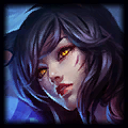
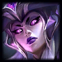
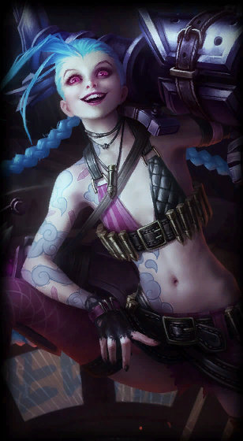
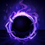
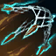

<title>GRIMOIRE 디자인 방향</title>
<meta name="claude:viewport-fit-sides" content="cover">
<link rel="preconnect" href="https://fonts.googleapis.com">
<link rel="preconnect" href="https://fonts.gstatic.com" crossorigin>
<link rel="stylesheet" href="https://fonts.googleapis.com/css2?family=Noto+Sans+KR:wght@400;500;700;900&family=Gothic+A1:wght@400;500;700;800;900&family=Nanum+Pen+Script&family=Bagel+Fat+One&family=Gowun+Dodum&family=Black+Han+Sans&family=Nanum+Gothic:wght@400;700;800&family=Orbit&display=swap">
<style>
/* 레이아웃: 심사 벽. 바깥은 무채색 벽과 잉크만 쓰고, 색은 세 방향의 시안 틀 안에서만 나온다. */
:root{
  --wall:#E3E4E7; --panel:#EEEFF1; --ink:#131417; --ink-2:#464951; --rule:#C3C5CB; --mark:#131417; --mark-ink:#EEEFF1;
  --f-page:"Noto Sans KR","Apple SD Gothic Neo","Malgun Gothic",system-ui,sans-serif;
  color-scheme:light;
}
@media (prefers-color-scheme: dark){:root:not([data-theme="light"]){--wall:#17181B;--panel:#202126;--ink:#ECEDEF;--ink-2:#A6A9B0;--rule:#3A3C43;--mark:#ECEDEF;--mark-ink:#17181B;color-scheme:dark}}
:root[data-theme="dark"]{--wall:#17181B;--panel:#202126;--ink:#ECEDEF;--ink-2:#A6A9B0;--rule:#3A3C43;--mark:#ECEDEF;--mark-ink:#17181B;color-scheme:dark}

*{box-sizing:border-box}
body{margin:0;word-break:keep-all;overflow-wrap:break-word;background:var(--wall);color:var(--ink);font-family:var(--f-page);font-size:16px;line-height:1.65;-webkit-font-smoothing:antialiased;text-rendering:optimizeLegibility}
.wrap{max-width:1342px;margin:0 auto;padding-left:max(16px,env(safe-area-inset-left,0px));padding-right:max(16px,env(safe-area-inset-right,0px))}
@media (min-width:760px){.wrap{padding-left:max(32px,env(safe-area-inset-left,0px));padding-right:max(32px,env(safe-area-inset-right,0px))}}
h1,h2,h3{text-wrap:balance;margin:0}
p{margin:0}
a{color:inherit}
:focus-visible{outline:3px solid var(--ink);outline-offset:3px;border-radius:4px}
.frame :focus-visible{outline:3px solid #2E66E0;outline-offset:2px}
.C :focus-visible,.C-sheet :focus-visible{outline-color:#9EC1FF}

/* 머리말 */
.mast{padding-block:56px 40px}
.kicker{font-size:13px;font-weight:700;letter-spacing:.08em;color:var(--ink-2)}
.mast h1{font-size:clamp(34px,5.2vw,64px);font-weight:900;letter-spacing:-.03em;line-height:1.08;margin-top:14px}
.lede{font-size:18px;line-height:1.7;max-width:46em;margin-top:18px}
.toc{display:flex;flex-wrap:wrap;gap:8px 22px;margin-top:22px;font-weight:700}
.toc a{text-decoration:none;border-bottom:2px solid var(--rule);padding-bottom:2px}
.toc a:hover{border-color:var(--ink)}
.note{margin-top:18px;font-size:14px;color:var(--ink-2)}

.hero3{display:grid;gap:24px;margin-top:36px;grid-template-columns:minmax(0,1fr);align-items:end}
@media (min-width:900px){.hero3{grid-template-columns:repeat(3,minmax(0,1fr))}}
.h3{margin:0;min-width:0}
.h3 .frame{border-radius:10px;overflow:hidden}
.h3a{padding:12px;background:#fff}
.h3b{padding:14px;background:#fff;border:3px solid #1A1A1A}
.h3c{background:#0C0B0A}
.h3 figcaption{margin-top:10px;font-size:14px;color:var(--ink-2)}
.h3 figcaption b{color:var(--ink);margin-right:8px}
/* 왜 갈아엎나 */
.why{padding-block:8px 64px}
.why h2,.common h2,.cmp h2{font-size:28px;font-weight:900;letter-spacing:-.02em}
.causes{display:grid;gap:28px;margin-top:24px;grid-template-columns:1fr}
@media (min-width:900px){.causes{grid-template-columns:repeat(3,minmax(0,1fr))}}
.cause{border-top:3px solid var(--ink);padding-top:16px;min-width:0}
.cause b{display:block;font-size:56px;font-weight:900;line-height:1;letter-spacing:-.04em}
.cause h3{font-size:21px;font-weight:900;margin-top:10px}
.cause p{margin-top:8px;color:var(--ink-2)}
.cause .ev{margin-top:10px;font-size:14px;font-weight:700;color:var(--ink)}
.common{padding-block:0 72px}
.rules{display:grid;gap:14px 28px;margin-top:20px;grid-template-columns:1fr;counter-reset:r}
@media (min-width:760px){.rules{grid-template-columns:repeat(2,minmax(0,1fr))}}
@media (min-width:1200px){.rules{grid-template-columns:repeat(4,minmax(0,1fr))}}
.rules li{list-style:none;min-width:0;font-size:15px;color:var(--ink-2)}
.rules li b{display:block;color:var(--ink);font-size:16px}
.rules{padding:0}

/* 방향 섹션 */
.dir{padding-block:72px 40px;border-top:1px solid var(--rule)}
.dir-head{display:grid;gap:10px 40px;grid-template-columns:1fr;align-items:end}
@media (min-width:1000px){.dir-head{grid-template-columns:minmax(0,1.3fr) minmax(0,1fr)}}
.dkey{font-size:15px;font-weight:900;letter-spacing:.1em;color:var(--ink-2);display:flex;gap:10px;align-items:center}
.rec{background:var(--mark);color:var(--mark-ink);font-size:13px;letter-spacing:.02em;padding:3px 10px;border-radius:3px}
.dir h2{font-size:clamp(36px,4.6vw,56px);font-weight:900;letter-spacing:-.035em;line-height:1.1;margin-top:6px}
.concept{font-size:20px;font-weight:700;line-height:1.55;margin-top:12px;max-width:30em}
.refs{font-size:14px;color:var(--ink-2)}
.refs b{color:var(--ink)}

.sheetwrap{margin-top:28px}
.phones{display:grid;gap:44px 24px;margin-top:40px;grid-template-columns:minmax(0,410px);justify-content:center}
@media (min-width:900px){.phones{grid-template-columns:repeat(2,minmax(0,410px))}}
@media (min-width:1330px){.phones{grid-template-columns:repeat(3,410px)}}
.ph{margin:0;min-width:0}
.ph figcaption{margin-top:14px;font-size:14px;color:var(--ink-2);max-width:410px}
.ph figcaption b{display:block;color:var(--ink);font-size:15px}
.gives{grid-column:1/-1;align-self:start;min-width:0;background:var(--panel);border-radius:6px;padding:24px 24px 26px}
@media (min-width:1330px){.gives{grid-column:span 2}}
@media (min-width:900px){.gives.one{grid-column:span 1}}
.gives h3{font-size:19px;font-weight:900}
.gives dl{margin:14px 0 0;display:grid;gap:14px}
.gives dt{font-weight:900;font-size:15px}
.gives dd{margin:2px 0 0;color:var(--ink-2);font-size:15px}
.gives .owner{margin-top:16px;font-size:14px;color:var(--ink-2)}

/* 폰 틀: 화면 390×844, 베젤 10px */
.fit{width:100%;max-width:410px}
.dev{width:410px;height:864px;padding:10px;border-radius:58px;background:#0E0F11;box-shadow:inset 0 0 0 1.5px #2A2C31,0 34px 60px -34px rgba(0,0,0,.55)}
.scr{position:relative;width:390px;height:844px;border-radius:48px;overflow:hidden;isolation:isolate}
.scroll{position:absolute;inset:0;overflow-y:auto;overflow-x:hidden;scrollbar-width:none;display:flex;flex-direction:column}
.scroll>*{flex-shrink:0}
.a-tabs,.b-tabs,.c-tabs{margin-top:auto!important}
.scroll::-webkit-scrollbar{display:none}
.sb{height:46px;display:flex;align-items:center;justify-content:space-between;padding:6px 30px 0 34px;font-size:15px;font-weight:700;letter-spacing:-.01em}
.sb svg{width:68px;height:12px}
.homebar{position:absolute;left:50%;bottom:8px;width:136px;height:5px;margin-left:-68px;border-radius:3px;z-index:30;pointer-events:none}
.sk{position:relative;display:inline-block;flex:none;overflow:hidden}
.sk img{display:block;width:100%;height:100%}
.sk.cd img{filter:grayscale(1) brightness(.62)}
.sk.cd::after{content:"";position:absolute;inset:0;background:conic-gradient(transparent 0 46deg,rgba(0,0,0,.5) 46deg 360deg)}
svg.draw{display:block;width:100%;height:auto;touch-action:none}
button{font:inherit;color:inherit;background:none;border:0;padding:0;cursor:pointer}
[data-state="real"] .only-best,[data-state="best"] .only-real{display:none!important}
.vh{position:absolute;width:1px;height:1px;overflow:hidden;clip:rect(0 0 0 0);white-space:nowrap}

/* 비교표 */
.cmp{padding-block:72px 32px;border-top:1px solid var(--rule)}
.tbl{margin-top:22px;overflow-x:auto;border-top:3px solid var(--ink)}
.tbl table{border-collapse:collapse;width:100%;min-width:760px;font-size:15px}
.tbl th,.tbl td{text-align:left;vertical-align:top;padding:12px 14px;border-bottom:1px solid var(--rule)}
.tbl thead th{font-size:14px;color:var(--ink-2);font-weight:700}
.tbl tbody th{font-weight:700;width:18%}
.tbl td b{font-weight:900}
.lv{display:inline-flex;gap:3px;margin-right:8px;vertical-align:1px}
.lv i{width:9px;height:9px;border:1.5px solid var(--ink);border-radius:1px}
.lv i.on{background:var(--ink)}
.pick{display:grid;gap:24px 40px;margin-top:40px;grid-template-columns:1fr}
@media (min-width:1000px){.pick{grid-template-columns:minmax(0,1fr) minmax(0,1fr)}}
.pick h3{font-size:30px;font-weight:900;letter-spacing:-.02em}
.pick ol{margin:14px 0 0;padding-left:1.3em}
.pick li{margin-top:8px}
.pick .borrow{background:var(--panel);border-radius:6px;padding:22px 24px}
.pick .borrow h4{margin:0;font-size:17px;font-weight:900}
.pick .borrow ul{margin:10px 0 0;padding-left:1.2em}
.pick .borrow li{margin-top:6px;color:var(--ink-2)}
.foot{padding-block:48px 64px;font-size:13px;color:var(--ink-2);border-top:1px solid var(--rule);margin-top:56px}
.foot p+p{margin-top:8px}
</style>
<style>
/* ===== A 작전판: 흰 종이 + 잉크. 노랑은 판 위 '그 순간' 원 하나와 오답 띠에만. 반경은 12px와 원 두 가지. (시안 틀 안 고정색) ===== */
.A,.A-sheet{font-family:"Gothic A1","Apple SD Gothic Neo","Malgun Gothic",sans-serif;color:#16171A;background:#FFFFFF}
.A .sb{color:#16171A}
.A .homebar{background:#16171A}
.nw{white-space:nowrap}
/* 밑줄 낱말 → 누르면 한 줄 풀이 (세 방향 공통 동작, 모양은 방향마다) */
.term{font:inherit;color:inherit;text-decoration:underline dotted 2px;text-underline-offset:5px;cursor:pointer;padding:0}
.tipline{margin-top:6px;font-size:16px;line-height:1.5}
.A .tipline{background:#F3F4F0;border-radius:12px;padding:8px 12px}
.a-top{display:grid;grid-template-columns:40px minmax(0,1fr) auto;align-items:center;gap:4px;padding:2px 16px 12px 8px}
.a-ic{width:40px;height:40px;display:grid;place-items:center}
.a-ic svg{width:24px;height:24px;color:currentColor}
.a-meta{font-size:13px;color:#5A5D65;font-weight:500}
.a-tt{font-size:17px;font-weight:800;letter-spacing:-.015em;line-height:1.3}
.a-txt{font-size:13px;font-weight:700;color:#5A5D65;padding:8px 4px}
.a-board{margin:0 12px;border:3px solid #DCDED8;border-radius:12px;background:#F3F4F0;overflow:hidden;box-shadow:inset 0 0 0 1px #fff,0 12px 22px -18px rgba(0,0,0,.45)}
.a-seg{display:flex;gap:22px;margin:12px 16px 0}
.a-seg button{font-size:16px;font-weight:700;color:#5A5D65;padding:8px 0 6px;border-bottom:3px solid transparent}
.a-seg button[aria-pressed="true"]{color:#16171A;border-color:#16171A}
.a-body{padding:14px 16px 0}
.a-h{font-size:22px;line-height:1.45;font-weight:800;letter-spacing:-.02em}
.a-p{font-size:17px;line-height:1.6;margin-top:6px}
.a-tag{font-size:13px;font-weight:700;color:#16171A;display:inline-flex;align-items:center;gap:5px;white-space:nowrap;vertical-align:3px;margin-left:4px}
.a-tag::before{content:"";width:8px;height:8px;border-radius:50%;background:currentColor}
.a-tag.maybe::before{background:transparent;box-shadow:inset 0 0 0 1.8px currentColor}
.a-cost{margin-top:14px;padding-top:12px;border-top:2px solid #16171A}
.a-cost-row{display:flex;align-items:center;justify-content:space-between;gap:10px}
.a-big{font-size:17px;font-weight:800;letter-spacing:-.01em;line-height:1.3}
.a-big em{font-style:normal;font-size:48px;font-weight:900;letter-spacing:-.04em;vertical-align:-6px;margin:0 2px}
.a-mins{display:flex;gap:3px;flex:none}
.a-mins svg{width:20px;height:22px}
.a-col{display:grid;gap:8px;min-width:0;margin-top:12px}
.a-hp{display:grid;grid-template-columns:22px minmax(0,1fr) 64px;gap:8px;align-items:center}
.a-hp svg{width:22px;height:22px;display:block}
.a-hpn{font-size:13px;font-weight:700}
.a-colh{font-size:13px;font-weight:800;display:flex;justify-content:space-between}
.bar{position:relative;height:11px;border:1.6px solid #16171A;background:#fff;overflow:hidden}
.bar i{position:absolute;top:0;bottom:0;left:0}
.bar::after{content:"";position:absolute;inset:0;background:repeating-linear-gradient(90deg,transparent 0 calc(10% - 1px),rgba(22,23,26,.35) calc(10% - 1px) 10%) 0 0/100% 50% no-repeat}
.a-rule{margin-top:18px;background:#F3F4F0;color:#16171A;border-radius:12px;padding:12px 14px;font-size:16px;line-height:1.55}
.a-rule .k{font-size:13px;font-weight:800;margin-bottom:2px}
.a-rule .mk{width:30px;height:14px;vertical-align:-1px}
.a-more{display:inline-block;margin-top:6px;font-size:13px;font-weight:800;color:#16171A}
.a-cta{position:sticky;bottom:0;padding:14px 16px 30px;background:linear-gradient(rgba(255,255,255,0),#fff 22%);margin-top:6px;display:grid;gap:4px}
.a-btn{height:56px;border-radius:12px;background:#16171A;color:#fff;font-size:17px;font-weight:800;letter-spacing:-.01em;width:100%}
.a-btn:active{transform:translateY(1px)}
.a-hint{font-size:13px;color:#16171A;font-weight:700;margin:8px 16px 0;display:flex;gap:6px;align-items:center}
.a-hint svg{width:16px;height:16px}
.a-steps{display:flex;gap:4px;margin:0 16px 10px}
.a-steps i{height:4px;flex:1;background:#E3E4DF}
.a-steps i.on{background:#16171A}
.a-lesson{padding:0 16px 10px}
.a-lesson h3{font-size:22px;line-height:1.38;font-weight:900;letter-spacing:-.025em;margin-top:4px}
.a-flow{margin-top:14px;display:grid;gap:0}
.a-flow div{display:grid;grid-template-columns:52px minmax(0,1fr);gap:10px;padding:10px 0;border-top:1px solid #E3E4DF;align-items:baseline}
.a-flow span{font-size:13px;font-weight:800}
.a-flow p{font-size:17px;line-height:1.5;font-weight:500}
.a-flow p b{font-weight:900}
.a-flow .do p{font-size:22px;font-weight:900}
/* 오늘: 회색은 날짜 한 줄만 */
.a-today{padding:4px 16px 0}
.a-date{font-size:13px;color:#5A5D65;font-weight:700}
.a-today h3{font-size:30px;font-weight:900;letter-spacing:-.03em;line-height:1.25;margin-top:4px}
.a-game{display:grid;grid-template-columns:76px minmax(0,1fr) 20px;gap:14px;align-items:center;margin-top:16px;padding:10px 0;border-top:2px solid #16171A;text-align:left;width:100%}
.a-game img{width:76px;height:76px;object-fit:cover;object-position:62% 24%;border-radius:12px;display:block}
.a-game .t{font-size:17px;font-weight:800}
.a-game .m{font-size:13px;margin-top:2px;font-weight:500}
.a-game .w{color:#2E66E0;font-weight:800}
.a-game svg{width:20px;height:20px}
.a-pract{margin-top:12px}
.a-pract .lab{font-size:13px;font-weight:800}
.a-card{margin-top:8px;border:3px solid #DCDED8;border-radius:12px;background:#F3F4F0;overflow:hidden}
.a-pract h4{margin:12px 0 0;font-size:22px;line-height:1.35;font-weight:900;letter-spacing:-.03em}
.a-pract .m{margin-top:4px;font-size:13px;font-weight:500}
.a-tabs{position:sticky;bottom:0;display:grid;grid-template-columns:repeat(5,1fr);background:#fff;border-top:1px solid #E3E4DF;padding:8px 6px 28px;margin-top:16px}
.a-tabs a{display:grid;justify-items:center;gap:3px;font-size:13px;font-weight:500;color:#16171A;text-decoration:none}
.a-tabs svg{width:24px;height:24px}
.a-tabs a[aria-current]{font-weight:900}
.a-tabs a[aria-current] svg{stroke-width:2.6}
/* 퀴즈 */
.a-qtop{display:grid;grid-template-columns:40px minmax(0,1fr);align-items:center;padding:2px 16px 8px 8px;gap:6px}
.a-q{font-size:22px;font-weight:900;letter-spacing:-.02em;padding:4px 16px 12px}
.a-opts{display:grid;grid-template-columns:1fr 1fr;gap:8px;padding:12px 12px 0}
.a-opt{border:2px solid #DCDED8;border-radius:12px;padding:10px 12px;text-align:left;display:grid;gap:4px;min-height:84px;align-content:start;background:#fff}
.a-opt svg{width:40px;height:24px}
.a-opt span{font-size:16px;font-weight:700;line-height:1.35}
.a-opt[aria-pressed="true"]{border-color:#16171A;box-shadow:inset 0 0 0 1px #16171A}
.a-band{position:sticky;bottom:0;margin-top:14px;padding:16px 16px 30px;display:none}
[data-answer="wrong"] .a-band.w,[data-answer="right"] .a-band.r{display:block}
.a-band.w{background:#FFF2A6;box-shadow:0 -1px 0 #E9D86A}
.a-band.r{background:#16171A;color:#fff}
.a-band h4{margin:0;font-size:22px;font-weight:900}
.a-band p{margin-top:4px;font-size:16px;line-height:1.5}
.a-band .a-btn{margin-top:12px}
.a-band.r .a-btn{background:#fff;color:#16171A}
/* 다크 모드: 틀만 흑연, 판·규칙 메모·풀이는 밝은 물건 그대로 */
.A.dark{background:#1C1D20;color:#F1F1EF}
.A.dark .sb,.A.dark .a-ic{color:#F1F1EF}
.A.dark .homebar{background:#F1F1EF}
.A.dark .a-meta,.A.dark .a-txt,.A.dark .a-seg button{color:#A9ACB3}
.A.dark .a-seg button[aria-pressed="true"]{color:#F1F1EF;border-color:#F1F1EF}
.A.dark .a-board{border-color:#3A3C41;box-shadow:0 14px 24px -16px rgba(0,0,0,.8)}
.A.dark .a-tag{color:#F1F1EF}
.A.dark .a-cost{border-color:#F1F1EF}
.A.dark .bar{border-color:#F1F1EF;background:#2A2B2F}
.A.dark .tipline{background:#F3F4F0;color:#16171A}
.A.dark .a-cta{background:linear-gradient(rgba(28,29,32,0),#1C1D20 22%)}
.A.dark .a-btn{background:#F1F1EF;color:#16171A}
/* 정체성 시트 */
.A-sheet{border-radius:6px;padding:28px;display:grid;gap:28px;grid-template-columns:1fr}
@media (min-width:1000px){.A-sheet{grid-template-columns:minmax(0,1.05fr) minmax(0,1fr) minmax(0,1.15fr)}}
.A-sheet .lab{color:#5A5D65}
.as-brand{display:flex;align-items:center;gap:14px}
.as-logo{width:64px;height:64px;flex:none}
.as-word{font-size:44px;font-weight:900;letter-spacing:-.02em;line-height:1}
.as-sub{font-size:16px;font-weight:700}
.as-p{font-size:14px;line-height:1.55}
.as-p b{font-weight:800}
.as-type{border-top:2px solid #16171A;padding-top:10px;display:grid;gap:6px}
.as-type .t1{font-size:34px;font-weight:900;letter-spacing:-.03em;line-height:1.15}
.as-type .t2{font-size:17px;line-height:1.55}
.as-type .t3{font-family:"Nanum Pen Script",cursive;font-size:30px;line-height:1}
.as-pic{border:3px solid #DCDED8;border-radius:12px;overflow:hidden;background:#F3F4F0}
.as-voice li{font-size:15px;line-height:1.5}
.A-sheet .lic{color:#5A5D65}
svg .a-draw{stroke-dasharray:100;animation:ringdraw .55s .35s cubic-bezier(.3,.7,.2,1) both}
@keyframes ringdraw{from{stroke-dashoffset:100}to{stroke-dashoffset:0}}
@media (prefers-reduced-motion:reduce){svg .a-draw{animation:none}}
</style>
<style>
/* ===== 정체성 시트 공통 뼈대 (색은 각 방향이 정한다) ===== */
.sheet .blk{min-width:0;display:grid;gap:12px;align-content:start}
.sheet .lab{font-size:12px;font-weight:700;letter-spacing:.08em}
.sheet .sw{display:grid;grid-template-columns:repeat(3,minmax(0,1fr));gap:8px}
.sheet .sw div{min-width:0}
.sheet .sw i{display:block;height:46px;border-radius:4px}
.sheet .sw b{display:block;font-size:13px;margin-top:6px;line-height:1.3}
.sheet .sw code{font-size:12px;font-family:ui-monospace,Menlo,monospace;opacity:.75}
.sheet .ul{margin:0;padding:0;list-style:none;display:grid;gap:7px;font-size:14px;line-height:1.5}
.sheet .ul b{font-weight:800}
.sheet .quote{display:grid;gap:8px;margin:0;padding:0;list-style:none}
.sheet .lic{font-size:12px;opacity:.75}
.sheet .icons{display:flex;gap:14px;align-items:center}
.sheet .icons svg{width:26px;height:26px}

/* ===== B 그리모 웹툰: 흰 종이 컷 + 잉크 선 + 그리모 분홍.
   잉크 선은 컷 테두리와 버튼에만. 반경은 버튼 16 · 말풍선 20 · 원 세 가지(컷은 직각). 딱딱한 그림자는 주 버튼 하나만. ===== */
.B,.B-sheet{font-family:"Gowun Dodum","Apple SD Gothic Neo",sans-serif;color:#1A1A1A;background:#FFFFFF}
.B .bd,.B-sheet .bd{font-family:"Bagel Fat One","Black Han Sans",sans-serif;font-weight:400;letter-spacing:-.01em}
.B .sb{color:#1A1A1A}
.B .homebar{background:#1A1A1A}
.B .tipline{font-size:15px;color:#1A1A1A;background:#FFF3DA;padding:6px 10px}
.b-top{display:grid;grid-template-columns:40px minmax(0,1fr) auto;align-items:center;gap:4px;padding:0 14px 8px 8px}
.b-top .bd{font-size:20px}
.b-ic{width:40px;height:40px;display:grid;place-items:center}
.b-ic svg{width:26px;height:26px}
.b-small{font-size:13px;color:#1A1A1A;padding:6px 2px;text-decoration:underline;text-underline-offset:3px}
.b-intro{display:grid;grid-template-columns:58px minmax(0,1fr);gap:8px;align-items:center;padding:0 16px 12px}
.b-bal{position:relative;background:#fff;border:2px solid #1A1A1A;border-radius:20px;padding:9px 14px;font-size:17px;line-height:1.5}
.b-bal::before{content:"";position:absolute;left:-10px;top:50%;margin-top:-6px;border:6px solid transparent;border-right:10px solid #1A1A1A;border-left:0}
.b-bal::after{content:"";position:absolute;left:-6.5px;top:50%;margin-top:-4.5px;border:4.5px solid transparent;border-right:8px solid #fff;border-left:0}
.b-bal b{font-family:"Bagel Fat One",sans-serif;font-weight:400}
.b-strip{display:grid;gap:10px;padding:0 16px}
.b-pan{position:relative;border:3px solid #1A1A1A;background:#fff;overflow:hidden}
.b-pan svg{display:block;width:100%;height:auto}
.b-row{display:grid;grid-template-columns:1fr 1fr;gap:10px}
/* 내레이션은 테두리 없는 책장색 띠. 컷 테두리가 곧 상자다 */
.b-nar{position:absolute;background:#FFF3DA;padding:3px 9px;font-size:15px;line-height:1.35;max-width:80%}
.b-nar.tl{left:0;top:0}.b-nar.bl{left:0;bottom:0}.b-nar.tr{right:0;top:0}
/* 비교·규칙·언제/무엇을/왜는 상자 없이 컷 아래 글로 */
.b-res{display:grid;grid-template-columns:1fr 1fr;gap:18px;padding:14px 16px 0}
.b-res>div{display:grid;gap:7px;align-content:start;min-width:0}
.b-res h4{margin:0;font-family:"Bagel Fat One",sans-serif;font-weight:400;font-size:16px}
.b-res h4 small{font-family:"Gowun Dodum",sans-serif;font-size:13px;margin-left:4px}
.b-hp{display:grid;grid-template-columns:24px minmax(0,1fr);gap:7px;align-items:center}
.b-hp img{width:24px;height:24px;border-radius:50%;border:2px solid #fff;outline:1.5px solid #1A1A1A;display:block;transform:rotate(-5deg)}
.bbar{position:relative;height:10px;border:1.5px solid #1A1A1A;background:#fff;overflow:hidden}
.bbar i{position:absolute;top:0;bottom:0;left:0}
.b-mins{display:flex;flex-wrap:wrap;gap:2px;margin-top:2px}
.b-mins svg{width:22px;height:24px}
.b-cost{font-size:15px;line-height:1.4}
.b-cost b{font-family:"Bagel Fat One",sans-serif;font-weight:400;font-size:18px;white-space:nowrap}
.b-rule{padding:16px 16px 0;font-size:17px;line-height:1.55}
.b-rule .bd{font-size:16px;display:block;margin-bottom:2px}
.b-cta{position:sticky;bottom:0;background:linear-gradient(rgba(255,255,255,0),#fff 22%);margin-top:12px;padding:14px 16px 30px}
.b-btn{height:56px;width:100%;border:3px solid #1A1A1A;border-radius:16px;background:#FF5B94;color:#1A1A1A;font-family:"Bagel Fat One",sans-serif;font-size:17px;box-shadow:0 4px 0 #1A1A1A;transition:transform .08s,box-shadow .08s}
.b-btn:active{transform:translateY(3px);box-shadow:0 1px 0 #1A1A1A}
.b-btn.ink{background:#1A1A1A;color:#fff;box-shadow:none}
.b-ep{display:grid;grid-template-columns:84px minmax(0,1fr);gap:14px;align-items:end;padding:2px 16px 14px}
.b-ep img{width:84px;height:112px;object-fit:cover;object-position:50% 12%;border:3px solid #1A1A1A;display:block}
.b-ep .no{font-size:15px}
.b-ep h3{font-family:"Bagel Fat One",sans-serif;font-weight:400;font-size:24px;line-height:1.3;margin-top:4px}
.b-beats{display:grid;gap:10px;padding:14px 16px 0}
.b-beat{display:grid;grid-template-columns:64px minmax(0,1fr);gap:8px;align-items:baseline}
.b-beat span{font-family:"Bagel Fat One",sans-serif;font-size:15px}
.b-beat p{font-size:17px;line-height:1.45}
.b-beat.do p{font-family:"Bagel Fat One",sans-serif;font-size:20px;line-height:1.3}
/* 오늘 */
.b-hero{background:#FF5B94}
.b-hero .sb{color:#1A1A1A}
.b-hero-in{display:grid;grid-template-columns:66px minmax(0,1fr);gap:8px;align-items:center;padding:0 16px 14px}
.b-hero .b-bal{font-size:16px}
.b-hero .b-bal::after{border-right-color:#fff}
.b-date{padding:14px 16px 0;font-size:13px}
.b-date b{font-family:"Bagel Fat One",sans-serif;font-weight:400;font-size:24px;margin-right:8px}
.b-game{display:grid;grid-template-columns:40px minmax(0,1fr) auto;gap:10px;align-items:center;padding:10px 16px 0;text-align:left;width:100%}
.b-game img{width:36px;height:36px;border-radius:50%;border:2px solid #fff;outline:1.5px solid #1A1A1A;display:block;transform:rotate(-6deg)}
.b-game .t{font-size:16px}
.b-game .t b{font-family:"Bagel Fat One",sans-serif;font-weight:400}
.b-game .go{font-size:15px;text-decoration:underline;text-underline-offset:3px;white-space:nowrap}
.b-today{padding:14px 16px 0}
.b-today .lab2{font-family:"Bagel Fat One",sans-serif;font-size:16px}
.b-today h4{margin:12px 0 0;font-family:"Bagel Fat One",sans-serif;font-weight:400;font-size:24px;line-height:1.32}
.b-today .m{font-size:15px;margin-top:4px}
.b-today .b-btn{margin-top:14px}
.b-tabs{position:sticky;bottom:0;display:grid;grid-template-columns:repeat(5,1fr);background:#fff;box-shadow:0 -1px 0 #E8E4DE;padding:8px 6px 28px;margin-top:18px}
.b-tabs a{display:grid;justify-items:center;gap:2px;font-size:13px;text-decoration:none;color:#1A1A1A}
.b-tabs svg{width:28px;height:28px}
.b-tabs a[aria-current]{text-decoration:underline;text-decoration-thickness:2px;text-underline-offset:3px}
/* 퀴즈 */
.b-prog{height:10px;background:#FBE0EA;overflow:hidden;margin-right:6px}
.b-prog i{display:block;height:100%;width:33%;background:#FF5B94}
.b-q{padding:0 16px 12px;font-family:"Bagel Fat One",sans-serif;font-size:22px;line-height:1.3}
.b-opts{display:grid;grid-template-columns:1fr 1fr;gap:10px;padding:12px 16px 0}
.b-opt{border:2px solid #1A1A1A;border-radius:16px;background:#fff;padding:10px;text-align:left;display:grid;gap:4px;min-height:80px;align-content:start}
.b-opt svg{width:40px;height:26px}
.b-opt span{font-size:15px;line-height:1.35}
.b-opt[aria-pressed="true"]{background:#FFF3DA;border-width:3px;padding:9px}
.b-band{position:sticky;bottom:0;padding:12px 16px 30px;margin-top:14px;display:none}
[data-answer="wrong"] .b-band.w,[data-answer="right"] .b-band.r{display:block}
.b-band.w{background:#FFD84A}
.b-band.r{background:#FF5B94}
.b-band .in{display:grid;grid-template-columns:56px minmax(0,1fr);gap:10px;align-items:center}
.b-band h4{margin:0;font-family:"Bagel Fat One",sans-serif;font-weight:400;font-size:20px}
.b-band p{font-size:15px;line-height:1.5;margin-top:2px}
.b-band .b-btn{margin-top:12px}
/* 효과음은 컷이 열릴 때 한 번 튄다 */
.b-sfx{transform-box:fill-box;transform-origin:center;animation:pop .32s .35s cubic-bezier(.3,1.6,.5,1) both}
@keyframes pop{from{transform:scale(.55) rotate(-8deg);opacity:0}to{transform:none;opacity:1}}
@media (prefers-reduced-motion:reduce){.b-sfx{animation:none}}
.B-sheet{background:#FFFFFF;border-radius:6px;padding:28px;display:grid;gap:28px;grid-template-columns:1fr;border:2px solid #1A1A1A}
@media (min-width:1000px){.B-sheet{grid-template-columns:minmax(0,1.05fr) minmax(0,1fr) minmax(0,1.15fr)}}
.B-sheet .lab{color:#1A1A1A;font-family:"Bagel Fat One",sans-serif;font-weight:400;letter-spacing:.02em;font-size:15px}
.bs-brand{display:flex;align-items:center;gap:12px}
.bs-face{flex:none;display:block}
.bs-word{font-size:46px;line-height:1;color:#FF5B94;-webkit-text-stroke:2.5px #1A1A1A;paint-order:stroke fill}
.bs-sub{font-size:17px}
.bs-type{border-top:2px solid #1A1A1A;padding-top:10px;display:grid;gap:6px}
.bs-type .t1{font-size:34px;line-height:1.15}
.bs-type .t2{font-size:17px;line-height:1.55}
.bs-pic{border:3px solid #1A1A1A;overflow:hidden}
.bs-voice li{font-size:15px;line-height:1.5}
.bs-moods{display:flex;gap:10px;align-items:flex-end}
</style>
<style>
/* ===== C 다시보기: 밝은 회색 화면 틀 + 어두운 장면 창 + 주황 하나(고정).
   빛은 장면 안 '그 순간' 스포트라이트 하나만. 흐림·빛 번짐·광택 없음. 반경 0(장면)·8·원. ===== */
.C,.C-sheet{font-family:"Nanum Gothic","Apple SD Gothic Neo",sans-serif;color:#1B1917;background:#ECEAE6}
.C .cd,.C-sheet .cd{font-family:"Black Han Sans","Nanum Gothic",sans-serif;font-weight:400}
.C .tc,.C-sheet .tc{font-family:"Orbit",ui-monospace,monospace;font-variant-numeric:tabular-nums}
.C .sb{color:#1B1917}
.C .homebar{background:#1B1917}
.C .tipline{font-size:15px;background:#FFFFFF;border-radius:8px;padding:8px 12px}
.c-top{display:grid;grid-template-columns:40px minmax(0,1fr);align-items:center;gap:4px;padding:0 16px 8px 8px}
.c-top button{width:40px;height:40px;display:grid;place-items:center}
.c-top svg{width:24px;height:24px}
.c-top p{font-size:15px;font-weight:800}
.c-frame{position:relative;background:#24221D;overflow:hidden}
.c-frame svg{display:block;width:100%;height:auto}
.c-hud{position:absolute;display:flex;gap:6px;align-items:center;z-index:3}
.c-hud.tl{left:12px;top:12px}
.c-hud.tr{right:12px;top:12px}
.c-chip{background:#1B1917;border-radius:8px;padding:4px 8px;font-size:13px;line-height:1.3;color:#F4F2EE;display:inline-flex;gap:6px;align-items:center}
.c-chip .tc{font-size:15px;letter-spacing:.02em}
.c-chip .sk{width:24px;height:24px}
.c-chip b{font-weight:800}
.c-sub{position:absolute;left:0;right:0;bottom:0;margin:0;background:#1B1917;color:#F4F2EE;text-align:center;font-family:"Black Han Sans",sans-serif;font-size:20px;line-height:1.35;padding:8px 16px 10px;z-index:3;animation:subin .5s .6s both}
@keyframes subin{from{opacity:0}to{opacity:1}}
.c-scrub{padding:12px 16px 0}
.c-track{position:relative;height:4px;background:#C9C5BE}
.c-track .pl{position:absolute;left:0;top:0;bottom:0;background:#1B1917}
.c-track .mk{position:absolute;top:50%;width:12px;height:12px;margin:-6px 0 0 -6px;border-radius:50%;background:#ECEAE6;border:2px solid #1B1917}
.c-track .mk.now{width:16px;height:16px;margin:-8px 0 0 -8px;background:#F08A00;border-color:#1B1917}
.c-times{display:flex;justify-content:space-between;font-size:13px;color:#5E5A54;margin-top:8px}
.c-times b{color:#1B1917;font-weight:400}
.c-seg{display:grid;grid-template-columns:1fr 1fr;gap:4px;margin:14px 16px 0;background:#DCD9D3;border-radius:8px;padding:4px}
.c-seg button{height:40px;border-radius:8px;font-size:15px;font-weight:800;color:#5E5A54}
.c-seg button[aria-pressed="true"]{background:#1B1917;color:#F4F2EE}
.c-body{padding:16px 16px 0}
.c-h{font-family:"Black Han Sans",sans-serif;font-size:24px;line-height:1.35;letter-spacing:.01em}
.c-p{font-size:17px;line-height:1.6;margin-top:6px}
.c-res{margin-top:16px;display:grid;grid-template-columns:1fr 1fr;gap:16px}
.c-res>div{display:grid;gap:8px;align-content:start;min-width:0;border-top:2px solid #C9C5BE;padding-top:10px}
.c-res>div.on{border-color:#F08A00}
.c-res h4{margin:0;font-size:15px;font-weight:800;display:flex;justify-content:space-between;align-items:center;gap:4px}
.c-res h4 small{font-size:13px;font-weight:700;color:#5E5A54}
.c-hp{display:grid;grid-template-columns:22px minmax(0,1fr);gap:7px;align-items:center}
.c-hp img{width:22px;height:22px;border-radius:50%;display:block}
.cbar{position:relative;height:9px;background:#1B1917;overflow:hidden}
.cbar i{position:absolute;top:1px;bottom:1px;left:1px}
.cbar::after{content:"";position:absolute;inset:0;background:repeating-linear-gradient(90deg,transparent 0 calc(10% - 1px),rgba(0,0,0,.6) calc(10% - 1px) 10%)}
.c-mins{display:flex;gap:3px}
.c-mins svg{width:16px;height:18px}
.c-cost{font-size:13px;line-height:1.4}
.c-cost b{display:block;font-family:"Black Han Sans",sans-serif;font-weight:400;font-size:20px;line-height:1.3;white-space:nowrap}
.c-rule{margin-top:16px;font-size:17px;line-height:1.6}
.c-rule b{display:block;font-family:"Orbit",monospace;font-weight:400;font-size:13px;letter-spacing:.06em;color:#5E5A54;margin-bottom:2px}
.c-cta{position:sticky;bottom:0;padding:14px 16px 30px;background:linear-gradient(rgba(236,234,230,0),#ECEAE6 24%);margin-top:6px}
.c-btn{height:54px;width:100%;border-radius:8px;background:#1B1917;color:#F4F2EE;font-size:17px;font-weight:800;display:flex;align-items:center;justify-content:center;gap:8px}
.c-btn svg{width:18px;height:18px}
.c-btn:active{transform:scale(.99)}
.c-link{display:inline-flex;align-items:center;gap:6px;font-size:15px;font-weight:800;color:#1B1917;text-decoration:underline;text-underline-offset:4px}
.c-link svg{width:14px;height:14px}
.c-chap{display:flex;gap:4px;padding:12px 16px 0}
.c-chap i{flex:1;height:4px;background:#C9C5BE}
.c-chap i.on{background:#1B1917}
.c-les{padding:14px 16px 0}
.c-les .k{font-size:13px;color:#5E5A54;font-weight:700}
.c-les h3{font-family:"Black Han Sans",sans-serif;font-weight:400;font-size:24px;line-height:1.35;margin-top:4px}
.c-lines{margin-top:14px;display:grid;gap:12px}
.c-lines div{display:grid;grid-template-columns:54px minmax(0,1fr);gap:10px;align-items:baseline}
.c-lines span{font-family:"Orbit",monospace;font-size:13px;color:#5E5A54;letter-spacing:.04em}
.c-lines p{font-size:17px;line-height:1.55}
.c-lines .do p{font-family:"Black Han Sans",sans-serif;font-size:22px;line-height:1.35}
/* 오늘: 표지는 원화 대신 그 판 장면 한 컷 */
.c-today{padding:14px 16px 0}
.c-today .k{font-size:13px;color:#1B1917;font-weight:800}
.c-today h3{font-family:"Black Han Sans",sans-serif;font-weight:400;font-size:24px;line-height:1.3;margin-top:4px}
.c-today .m{font-size:15px;margin-top:4px}
.c-today .c-link{margin-top:8px}
.c-clip{margin-top:12px;display:grid;grid-template-columns:120px minmax(0,1fr);gap:14px;align-items:center;padding-top:14px;border-top:2px solid #C9C5BE}
.c-clip .pv{display:block;width:120px;height:88px;background:#24221D;overflow:hidden}
.c-clip h4{margin:0;font-size:17px;line-height:1.4;font-weight:800}
.c-clip .m{font-size:13px;margin-top:4px}
.c-tabs{position:sticky;bottom:0;display:grid;grid-template-columns:repeat(5,1fr);background:#ECEAE6;border-top:1px solid #C9C5BE;padding:8px 6px 28px;margin-top:18px}
.c-tabs a{display:grid;justify-items:center;gap:3px;font-size:13px;color:#1B1917;text-decoration:none;font-weight:400}
.c-tabs svg{width:24px;height:24px}
.c-tabs a[aria-current]{font-weight:800}
/* 퀴즈 */
.c-q{padding:16px 16px 0;font-family:"Black Han Sans",sans-serif;font-size:22px;line-height:1.35}
.c-opts{display:grid;gap:8px;padding:14px 16px 0}
.c-opt{display:grid;grid-template-columns:32px minmax(0,1fr);gap:10px;align-items:center;text-align:left;background:#FFFFFF;border-radius:8px;padding:12px;font-size:17px;font-weight:700}
.c-opt .tc{width:32px;height:32px;border-radius:50%;display:grid;place-items:center;background:#ECEAE6;font-size:13px}
.c-opt[aria-pressed="true"]{box-shadow:inset 0 0 0 2px #1B1917}
.c-band{position:sticky;bottom:0;margin-top:14px;padding:16px 16px 30px;display:none}
[data-answer="wrong"] .c-band.w,[data-answer="right"] .c-band.r{display:block}
.c-band.w{background:#FFC24D;color:#1B1409}
.c-band.r{background:#1B1917;color:#F4F2EE}
.c-band h4{margin:0;font-family:"Black Han Sans",sans-serif;font-weight:400;font-size:22px}
.c-band p{font-size:17px;line-height:1.5;margin-top:4px}
.c-band .c-btn{margin-top:12px}
.c-band.r .c-btn{background:#F4F2EE;color:#1B1917}
.spot{animation:iris .7s .25s cubic-bezier(.4,0,.2,1) both}
@keyframes iris{from{opacity:0}to{opacity:1}}
@media (prefers-reduced-motion:reduce){.spot,.c-sub{animation:none}}
.honest{margin-top:12px;font-size:15px;font-weight:700;color:var(--ink);max-width:46em}
.C-sheet{border-radius:6px;padding:28px;display:grid;gap:28px;grid-template-columns:1fr}
@media (min-width:1000px){.C-sheet{grid-template-columns:minmax(0,1.05fr) minmax(0,1fr) minmax(0,1.15fr)}}
.C-sheet .lab{color:#5E5A54}
.C-sheet .lic{color:#5E5A54;opacity:1}
.cs-brand{display:flex;align-items:center;gap:14px}
.cs-logo{width:64px;height:64px;flex:none}
.cs-word{font-size:40px;line-height:1;letter-spacing:.04em}
.cs-scrub{position:relative;height:4px;background:#C9C5BE;margin-top:8px}
.cs-scrub i{position:absolute;left:0;top:0;bottom:0;width:58%;background:#1B1917}
.cs-scrub b{position:absolute;left:58%;top:50%;width:12px;height:12px;margin:-6px 0 0 -6px;border-radius:50%;background:#F08A00;box-shadow:0 0 0 2px #1B1917}
.cs-sub{font-size:16px;font-weight:800}
.cs-type{border-top:2px solid #1B1917;padding-top:10px;display:grid;gap:6px}
.cs-type .t1{font-size:24px;line-height:1.3}
.cs-type .t2{font-size:17px;line-height:1.6}
.cs-type .t3{font-size:16px}
.cs-pic{overflow:hidden;background:#24221D}
.cs-voice li{font-size:15px;line-height:1.5}
</style>
<svg width="0" height="0" style="position:absolute" aria-hidden="true" focusable="false">
 <defs>
  <clipPath id="cC" clipPathUnits="objectBoundingBox"><circle cx=".5" cy=".5" r=".5"/></clipPath>
  <filter id="fRough" filterUnits="userSpaceOnUse" x="-200" y="-200" width="1400" height="1400"><feTurbulence type="fractalNoise" baseFrequency="0.035" numOctaves="2" seed="7" result="n"/><feDisplacementMap in="SourceGraphic" in2="n" scale="2.6" xChannelSelector="R" yChannelSelector="G"/></filter>
  <filter id="fSoft" filterUnits="userSpaceOnUse" x="-200" y="-200" width="1400" height="1400"><feGaussianBlur stdDeviation="2.2"/></filter>
  <filter id="fBlur" filterUnits="userSpaceOnUse" x="-200" y="-200" width="1400" height="1400"><feGaussianBlur stdDeviation="5"/></filter>
  <filter id="fGlow" filterUnits="userSpaceOnUse" x="-200" y="-200" width="1400" height="1400"><feGaussianBlur stdDeviation="3.2" result="b"/><feMerge><feMergeNode in="b"/><feMergeNode in="SourceGraphic"/></feMerge></filter>
  <filter id="fGray"><feColorMatrix type="matrix" values=".2 .7 .1 0 0 .2 .7 .1 0 0 .2 .7 .1 0 0 0 0 0 1 0"/><feComponentTransfer><feFuncR type="linear" slope=".62"/><feFuncG type="linear" slope=".62"/><feFuncB type="linear" slope=".62"/></feComponentTransfer></filter>
  <filter id="fNoise" filterUnits="userSpaceOnUse" x="0" y="0" width="420" height="460"><feTurbulence type="fractalNoise" baseFrequency=".9" numOctaves="2" seed="4"/><feColorMatrix values="0 0 0 0 1 0 0 0 0 .96 0 0 0 0 .85 0 0 0 .7 -.25"/></filter>
  <radialGradient id="gRim" cx="34%" cy="26%" r="82%"><stop offset="0" stop-color="#fff" stop-opacity=".6"/><stop offset=".42" stop-color="#fff" stop-opacity="0"/><stop offset="1" stop-color="#000" stop-opacity=".28"/></radialGradient>
  <radialGradient id="gSph" cx="35%" cy="30%" r="75%"><stop offset="0" stop-color="#fff" stop-opacity=".7"/><stop offset=".35" stop-color="#fff" stop-opacity="0"/><stop offset="1" stop-color="#000" stop-opacity=".45"/></radialGradient>
  <radialGradient id="gOrbA"><stop offset="0" stop-color="#fff"/><stop offset=".35" stop-color="#BFD6FF"/><stop offset=".7" stop-color="#6E9BFF" stop-opacity=".7"/><stop offset="1" stop-color="#6E9BFF" stop-opacity="0"/></radialGradient>
  <radialGradient id="gOrbS"><stop offset="0" stop-color="#F3E8FF"/><stop offset=".35" stop-color="#B07CFF"/><stop offset=".75" stop-color="#5B2BB5" stop-opacity=".7"/><stop offset="1" stop-color="#5B2BB5" stop-opacity="0"/></radialGradient>
  <linearGradient id="gRiver" x1="0" y1="0" x2="1" y2="1"><stop offset="0" stop-color="#173F4A"/><stop offset="1" stop-color="#235F6C"/></linearGradient>
  <pattern id="pDots" width="18" height="18" patternUnits="userSpaceOnUse"><circle cx="9" cy="9" r=".9" fill="#D9DBD4"/></pattern>
  <pattern id="pTone" width="6" height="6" patternUnits="userSpaceOnUse" patternTransform="rotate(30)"><circle cx="3" cy="3" r="1.25" fill="#1A1A1A"/></pattern>
  <pattern id="pToneLt" width="6" height="6" patternUnits="userSpaceOnUse" patternTransform="rotate(30)"><circle cx="3" cy="3" r=".9" fill="#1A1A1A"/></pattern>
 </defs>
 <symbol id="i-sb" viewBox="0 0 68 12"><g fill="currentColor"><rect x="0" y="8" width="3" height="4" rx=".7"/><rect x="4.5" y="6" width="3" height="6" rx=".7"/><rect x="9" y="3.5" width="3" height="8.5" rx=".7"/><rect x="13.5" y="1" width="3" height="11" rx=".7"/></g><path d="M24 4.2a9 9 0 0 1 12 0M26.3 6.6a5.6 5.6 0 0 1 7.4 0M28.6 9a2.2 2.2 0 0 1 2.8 0" fill="none" stroke="currentColor" stroke-width="1.6" stroke-linecap="round"/><rect x="42.5" y="1.5" width="21" height="9.5" rx="2.6" fill="none" stroke="currentColor" stroke-opacity=".45"/><rect x="44.3" y="3.2" width="15" height="6.1" rx="1.4" fill="currentColor"/><rect x="64.6" y="4.4" width="1.6" height="3.8" rx=".6" fill="currentColor" fill-opacity=".45"/></symbol>
 <!-- A 아이콘: 2px 둥근 끝 선, 24 격자 -->
 <symbol id="a-back" viewBox="0 0 24 24"><path d="M15 5l-7 7 7 7" fill="none" stroke="currentColor" stroke-width="2.2" stroke-linecap="round" stroke-linejoin="round"/></symbol>
 <symbol id="a-close" viewBox="0 0 24 24"><path d="M6 6l12 12M18 6L6 18" fill="none" stroke="currentColor" stroke-width="2.2" stroke-linecap="round"/></symbol>
 <symbol id="a-next" viewBox="0 0 24 24"><path d="M9 5l7 7-7 7" fill="none" stroke="currentColor" stroke-width="2.2" stroke-linecap="round" stroke-linejoin="round"/></symbol>
 <symbol id="a-hand" viewBox="0 0 24 24"><path d="M9 11V5a1.6 1.6 0 0 1 3.2 0v5.5M12.2 10V8.6a1.6 1.6 0 0 1 3.2 0v2M15.4 10.2a1.6 1.6 0 0 1 3.2 0V15a6 6 0 0 1-6 6h-.8a6 6 0 0 1-5-2.7L4 14.8a1.6 1.6 0 0 1 2.6-1.8L9 15" fill="none" stroke="currentColor" stroke-width="1.8" stroke-linecap="round" stroke-linejoin="round"/></symbol>
 <symbol id="a-t1" viewBox="0 0 24 24"><g fill="none" stroke="currentColor" stroke-width="2" stroke-linecap="round" stroke-linejoin="round"><rect x="4" y="5" width="16" height="15" rx="2.5"/><path d="M4 10h16M8.5 3v4M15.5 3v4"/></g><circle cx="12" cy="15" r="1.7" fill="currentColor"/></symbol>
 <symbol id="a-t2" viewBox="0 0 24 24"><g fill="none" stroke="currentColor" stroke-width="2" stroke-linecap="round" stroke-linejoin="round"><path d="M4.5 12a7.5 7.5 0 1 0 2.2-5.3"/><path d="M4.5 4.5v4h4"/><path d="M12 8.5V12l2.5 2"/></g></symbol>
 <symbol id="a-t3" viewBox="0 0 24 24"><g fill="none" stroke="currentColor" stroke-width="2" stroke-linejoin="round"><path d="M3 6.2c3-1.6 6-1.6 9 0V19c-3-1.6-6-1.6-9 0z"/><path d="M21 6.2c-3-1.6-6-1.6-9 0V19c3-1.6 6-1.6 9 0z"/></g></symbol>
 <symbol id="a-t4" viewBox="0 0 24 24"><g fill="none" stroke="currentColor" stroke-width="2"><circle cx="12" cy="12" r="8"/><circle cx="12" cy="12" r="4"/></g><circle cx="12" cy="12" r="1.4" fill="currentColor"/></symbol>
 <symbol id="a-t5" viewBox="0 0 24 24"><g fill="none" stroke="currentColor" stroke-width="2" stroke-linecap="round"><circle cx="12" cy="8.5" r="3.6"/><path d="M5 20c1.4-3.8 4-5.4 7-5.4s5.6 1.6 7 5.4"/></g></symbol>
 <!-- B 아이콘: 잉크 테두리 2.5 + 면 채움 -->
 <symbol id="b-back" viewBox="0 0 26 26"><path d="M16 5l-8 8 8 8" fill="none" stroke="#1A1A1A" stroke-width="3.4" stroke-linecap="round" stroke-linejoin="round"/></symbol>
 <symbol id="b-close" viewBox="0 0 26 26"><path d="M7 7l12 12M19 7L7 19" fill="none" stroke="#1A1A1A" stroke-width="3.4" stroke-linecap="round"/></symbol>
 <symbol id="b-t1" viewBox="0 0 28 28"><rect x="4" y="6" width="20" height="18" rx="4" fill="#FFF3DA" stroke="#1A1A1A" stroke-width="2.5"/><path d="M4 11.5h20" stroke="#1A1A1A" stroke-width="2.5"/><path d="M9.5 3.5v5M18.5 3.5v5" stroke="#1A1A1A" stroke-width="2.5" stroke-linecap="round"/><circle cx="14" cy="17.5" r="2.6" fill="#FF5B94" stroke="#1A1A1A" stroke-width="2"/></symbol>
 <symbol id="b-t2" viewBox="0 0 28 28"><rect x="3.5" y="5" width="21" height="18" rx="4" fill="#fff" stroke="#1A1A1A" stroke-width="2.5"/><path d="M3.5 14h21M14 5v18" stroke="#1A1A1A" stroke-width="2.5"/><rect x="5" y="6.5" width="7.7" height="6.3" fill="#86D3EE"/></symbol>
 <symbol id="b-t3" viewBox="0 0 28 28"><rect x="7" y="4" width="16" height="20" rx="3.5" fill="#FFF3DA" stroke="#1A1A1A" stroke-width="2.5"/><rect x="4.5" y="3" width="15" height="20" rx="3.5" fill="#FF5B94" stroke="#1A1A1A" stroke-width="2.5"/><circle cx="10" cy="12" r="1.6" fill="#1A1A1A"/><circle cx="15" cy="12" r="1.6" fill="#1A1A1A"/></symbol>
 <symbol id="b-t4" viewBox="0 0 28 28"><circle cx="14" cy="14" r="10.5" fill="#fff" stroke="#1A1A1A" stroke-width="2.5"/><circle cx="14" cy="14" r="5.5" fill="#FFD84A" stroke="#1A1A1A" stroke-width="2.5"/><circle cx="14" cy="14" r="1.6" fill="#1A1A1A"/></symbol>
 <symbol id="b-t5" viewBox="0 0 28 28"><circle cx="14" cy="10" r="5" fill="#FFF3DA" stroke="#1A1A1A" stroke-width="2.5"/><path d="M5 24c1.4-4.6 4.8-6.6 9-6.6s7.6 2 9 6.6z" fill="#86D3EE" stroke="#1A1A1A" stroke-width="2.5" stroke-linejoin="round"/></symbol>
 <!-- C 아이콘: 채운 글리프, 선 없음 -->
 <symbol id="c-back" viewBox="0 0 24 24"><path d="M15.9 3.6a1.4 1.4 0 0 1 0 2L9.5 12l6.4 6.4a1.4 1.4 0 1 1-2 2l-7.4-7.4a1.4 1.4 0 0 1 0-2l7.4-7.4a1.4 1.4 0 0 1 2 0z" fill="currentColor"/></symbol>
 <symbol id="c-close" viewBox="0 0 24 24"><path d="M5.6 3.6L12 10l6.4-6.4a1.4 1.4 0 1 1 2 2L14 12l6.4 6.4a1.4 1.4 0 1 1-2 2L12 14l-6.4 6.4a1.4 1.4 0 1 1-2-2L10 12 3.6 5.6a1.4 1.4 0 1 1 2-2z" fill="currentColor"/></symbol>
 <symbol id="c-play" viewBox="0 0 24 24"><path d="M7 4.8v14.4c0 .8.9 1.3 1.6.8l11-7.2c.6-.4.6-1.3 0-1.7l-11-7.2C7.9 3.5 7 4 7 4.8z" fill="currentColor"/></symbol>
 <symbol id="c-t1" viewBox="0 0 24 24"><path d="M6 4h12a3 3 0 0 1 3 3v11a3 3 0 0 1-3 3H6a3 3 0 0 1-3-3V7a3 3 0 0 1 3-3zm-1 6v8a1 1 0 0 0 1 1h12a1 1 0 0 0 1-1v-8z" fill="currentColor"/><circle cx="12" cy="14.5" r="2" fill="currentColor"/></symbol>
 <symbol id="c-t2" viewBox="0 0 24 24"><path d="M12 2.5a9.5 9.5 0 1 1 0 19 9.5 9.5 0 0 1 0-19zm-2 6.2v6.6c0 .5.6.8 1 .5l5-3.3c.4-.3.4-.8 0-1.1l-5-3.3c-.4-.2-1 .1-1 .6z" fill="currentColor"/></symbol>
 <symbol id="c-t3" viewBox="0 0 24 24"><path d="M3 5.5C6 4 9 4 11.2 5.3V20C9 18.8 6 18.8 3 20.2zM21 5.5C18 4 15 4 12.8 5.3V20c2.2-1.2 5.2-1.2 8.2.2z" fill="currentColor"/></symbol>
 <symbol id="c-t4" viewBox="0 0 24 24"><path d="M12 2.5a9.5 9.5 0 1 1 0 19 9.5 9.5 0 0 1 0-19zm0 4a5.5 5.5 0 1 0 0 11 5.5 5.5 0 0 0 0-11zm0 3a2.5 2.5 0 1 1 0 5 2.5 2.5 0 0 1 0-5z" fill="currentColor"/></symbol>
 <symbol id="c-t5" viewBox="0 0 24 24"><circle cx="12" cy="8" r="4.2" fill="currentColor"/><path d="M4 20.5c.9-4.3 4-6.6 8-6.6s7.1 2.3 8 6.6c.1.6-.3 1-.9 1H4.9c-.6 0-1-.4-.9-1z" fill="currentColor"/></symbol>
 <!-- 로고 -->
 <symbol id="logoA" viewBox="0 0 48 48"><circle cx="28" cy="25" r="15.5" fill="#FFE34A"/><circle cx="26" cy="24" r="15" fill="none" stroke="#16171A" stroke-width="3.4" stroke-dasharray="6.2 4.4" stroke-linecap="round"/><circle cx="32" cy="21" r="5.2" fill="#16171A"/><path d="M2.5 30.5H17M12 25.5l5 5-5 5" fill="none" stroke="#16171A" stroke-width="3.4" stroke-linecap="round" stroke-linejoin="round"/></symbol>
 <symbol id="logoC" viewBox="0 0 48 48"><rect x="2" y="8" width="44" height="32" rx="9" fill="#0C0B0A" stroke="#F4F1EA" stroke-width="2"/><path d="M11 31H37" stroke="#4A453F" stroke-width="3" stroke-linecap="round"/><path d="M11 31H26" stroke="#F4F1EA" stroke-width="3" stroke-linecap="round"/><circle cx="26" cy="31" r="4.4" fill="#F08A00"/><path d="M23 14.5l-6.5 4.2 6.5 4.2zM31 14.5l-6.5 4.2 6.5 4.2z" fill="#F4F1EA"/></symbol>
</svg>

<header class="mast wrap">
 <p class="kicker">GRIMOIRE 협곡의 마도서 · 디자인 다시 기획 <span style="white-space:nowrap">2026-11-03</span></p>
 <h1>세 가지 방향,<br>같은 네 화면</h1>
 <p class="lede">지금 프로토타입은 기획서 항목을 같은 무게로 옮겨 놓은 실험 노트였어요. AI티 진단 23개와 우수작 20개를 근거로 그림 언어, 색, 글꼴, 구조가 서로 다른 세 방향을 정하고, 복기 피드백과 레슨 장면, 오늘, 그림 퀴즈를 방향마다 새로 그렸어요. 하나를 고르면 그 방향으로 프로토타입 전체를 다시 만들어요.</p>
 <nav class="toc" aria-label="이 페이지 차례"><a href="#why">왜 갈아엎나</a><a href="#dirA">A 작전판</a><a href="#dirB">B 그리모 웹툰</a><a href="#dirC">C 다시보기</a><a href="#compare">비교와 추천</a></nav>
 <p class="note">시안 속 장면·기록·문구는 장면 대본(plain-language.md)을 따른 설명용 예시예요. 폰 화면은 누르고 끌어 볼 수 있어요.</p>
 <div class="hero3" role="group" aria-label="같은 12:42 장면을 세 그림 언어로">
  <figure class="h3"><div class="frame A h3a"><div class="a-board" style="margin:0"><svg class="draw" data-draw="A1" viewBox="0 0 366 330" role="img" aria-label="A 작전판으로 그린 12:42 장면"></svg></div></div><figcaption><b>A 작전판</b>자석 말, 마커 선, 형광펜 한 번</figcaption></figure>
  <figure class="h3"><div class="frame B h3b"><div class="b-intro" style="padding:0 0 10px"><span data-grimo="sad" data-size="54"></span><p class="b-bal"><b>아깝다!</b> 여기서 딜교를 이길 수 있었어요.</p></div><div class="b-pan"><svg class="draw" data-draw="B1a" viewBox="0 0 352 190" role="img" aria-label="B 웹툰 컷으로 그린 12:42 장면"></svg><p class="b-nar tl">신드라가 Q로 막타!</p></div></div><figcaption><b>B 그리모 웹툰</b>스티커 말, 스크린톤, 효과음</figcaption></figure>
  <figure class="h3"><div class="frame C h3c"><div class="c-frame"><svg class="draw" data-draw="C1" viewBox="0 0 390 330" role="img" aria-label="C 다시보기 화면으로 그린 12:42 장면"></svg><p class="c-sub">신드라 Q가 빠졌는데, 뒤로 물러났어요.</p></div></div><figcaption><b>C 다시보기</b>비스듬한 땅, 빛, 자막</figcaption></figure>
 </div>
</header>

<section class="why wrap" id="why" aria-labelledby="why-h">
 <h2 id="why-h">왜 갈아엎나</h2>
 <div class="causes">
  <article class="cause"><b>1</b><h3>주인공을 정하지 않았다</h3><p>기획서 항목을 하나도 빼지 않고 같은 무게로 올렸어요. 화면 어디에도 3초 안에 볼 것 하나가 없어요.</p><p class="ev">화면 6개에 알약 117개 · 피드백 카드 하나에 버튼 5개 · 글자의 69%가 14px 이하</p></article>
  <article class="cause"><b>2</b><h3>정체성이 없었다</h3><p>이름은 마도서인데 화면은 회녹색 실험 노트예요. 빈자리는 아무 제품에나 들어갈 기본값이 채웠고, 롤 그림은 도식 위 스티커처럼 붙었어요.</p><p class="ev">추상 도형 로고 · 장면 그림 1개 구도를 8곳에 반복 · 다크 모드는 흑녹 + 민트</p></article>
  <article class="cause"><b>3</b><h3>설명이 디자인을 대신했다</h3><p>화면이 스스로를 해설했어요. 예시·나중 버전·범례·괄호 풀이가 그림보다 먼저 보였어요.</p><p class="ev">'예시' 18회 · 상태 범례 5종 · 점선 상자 34개</p></article>
 </div>
</section>

<section class="common wrap" aria-labelledby="common-h">
 <h2 id="common-h">세 방향이 모두 지키는 것</h2>
 <ul class="rules">
  <li><b>화면마다 주인공 하나</b>장면을 다루는 화면은 첫 화면(390×844)에서 장면이 가장 큰 요소이고, 넓이의 30% 이상이에요.</li>
  <li><b>주 버튼 하나, 카드 안 카드 없음</b>다른 행동은 글자 버튼으로 한 단계 내려요.</li>
  <li><b>본문 16~18px, 크기 5단계</b>12px 이하는 법적 고지에만 써요.</li>
  <li><b>강조색 하나</b>우리 편 파랑·상대 빨강은 장면 안의 정보 색으로만 써요.</li>
  <li><b>판정은 대상에 붙인다</b>'Q 없음'은 신드라 옆에, '아마도'는 그 숫자 옆에.</li>
  <li><b>숫자 대신 눈에 보이는 신호</b>회색 아이콘, 평타 원, 체력바, 미니언 몇 마리 값.</li>
  <li><b>사거리 원은 실제 비율, 원은 통째로</b>케이틀린 650 · 아리 550 · 징크스 525 · 쓰레쉬 450.</li>
  <li><b>화면에 시연용 해설 없음</b>예시 안내는 시안 틀 바깥 한 줄에만 둬요.</li>
 </ul>
</section>
<section class="dir" id="dirA" aria-labelledby="A-h">
 <div class="dir-head wrap">
  <div>
   <p class="dkey">방향 A <span class="rec">추천</span></p>
   <h2 id="A-h">작전판</h2>
   <p class="concept">코치가 작전판 위에 자석을 놓고, 형광펜으로 그 순간 하나만 칠해 준다.</p>
  </div>
  <p class="refs"><b>출발점</b> 조사원 후보 ① 코치 보드. <b>근거</b> Chess.com 게임 리뷰(말에 붙는 판정, 판 바로 아래 비교), Lichess(한 줄 해설), Brilliant(직접 움직이는 그림), 토스(화면당 그래픽 하나·버튼 하나).</p>
 </div>

 <div class="wrap sheetwrap">
  <div class="frame sheet A-sheet" aria-label="방향 A 정체성">
   <div class="blk">
    <p class="lab">이름과 로고</p>
    <div class="as-brand"><svg class="as-logo" viewBox="0 0 48 48" aria-hidden="true"><use href="#logoA"/></svg><p class="as-word">GRIMOIRE</p></div>
    <p class="as-sub">그리모어 · 롤 복기 작전판</p>
    <ul class="ul">
     <li><b>로고</b> 점선 평타 원 + 원 안의 자석 + 들어가는 화살표. "한 걸음 들어가면 닿는다"를 한 기호로 썼어요. 노랑은 로고 속 원과 판 위 원에만 있어요.</li>
     <li><b>마도서 은유</b> 버린다. 이름 GRIMOIRE만 고유명사로 남기고, 해독·시전·각인 같은 판타지 말은 화면에서 지워요.</li>
     <li><b>워드마크</b> Gothic A1 900, 자간 −2%, 잉크 한 색.</li>
    </ul>
   </div>
   <div class="blk">
    <p class="lab">색 토큰</p>
    <div class="sw">
     <div><i style="background:#FFFFFF;box-shadow:inset 0 0 0 1px #DCDED8"></i><b>종이</b><code>#FFFFFF</code></div>
     <div><i style="background:#F3F4F0;box-shadow:inset 0 0 0 1px #DCDED8"></i><b>작전판</b><code>#F3F4F0</code></div>
     <div><i style="background:#16171A"></i><b>잉크</b><code>#16171A</code></div>
     <div><i style="background:#FFE34A"></i><b>형광펜 (강조)</b><code>#FFE34A</code></div>
     <div><i style="background:#2E66E0"></i><b>우리 편 (정보)</b><code>#2E66E0</code></div>
     <div><i style="background:#DE3F3B"></i><b>상대 (정보)</b><code>#DE3F3B</code></div>
    </div>
    <p class="as-p"><b>노랑을 쓰는 곳은 두 군데뿐</b> 판 위 '그 순간' 원 하나와 오답 띠. 제목·탭·규칙 줄의 강조는 굵기로 해요.</p>
    <p class="as-p"><b>다크 모드</b> 화면 틀만 흑연색(#1C1D20)으로 바뀌고, 작전판과 규칙 메모는 밝은 '물건'으로 남아요. 아래 다크 시안을 함께 그렸어요.</p>
    <p class="lab">글꼴 짝</p>
    <div class="as-type"><p class="t1">한 걸음 앞으로</p><p class="t2">상대 스킬이 회색이고 상대가 내 원 안이면, 평타 한 대 + Q.</p><p class="t3">Q 없음!</p></div>
    <p class="lic">Gothic A1(HanYang I&amp;C) · 화면 전체, 400/500/700/800/900 · Nanum Pen Script(Sandoll) · 작전판 위 코치 손글씨만, 한 판에 2곳까지. 둘 다 SIL Open Font License 1.1, Google Fonts.</p>
   </div>
   <div class="blk">
    <p class="lab">그림 언어</p>
    <div class="as-pic"><svg class="draw" data-draw="A0" viewBox="0 0 330 150" role="img" aria-label="작전판 견본: 자석 말, 점선 평타 원, 형광펜, 손글씨"></svg></div>
    <ul class="ul">
     <li><b>바닥</b> 인쇄된 작전판. 옅은 점 격자 위에 라인·강·정글 벽을 연한 회색으로 찍어요.</li>
     <li><b>말</b> 챔피언은 자석. 초상화를 진영색 테두리에 넣고 아래로 그림자. 미니언은 작은 진영색 자석.</li>
     <li><b>효과</b> 코치 마커만. 평타 원은 진영색 점선, 화살표와 발자국은 검정, 그 순간은 형광펜 원 하나. 손글씨는 판당 2곳, 선과 겹치지 않게.</li>
     <li><b>초상화·원화</b> 초상화는 늘 자석(작전판 44px, 줄 안 22px). 원화는 '방금 끝난 판' 썸네일 76px 하나에만, 얼굴로 잘라요.</li>
    </ul>
    <div class="icons" aria-label="아이콘 계열: 2px 둥근 끝 선"><svg><use href="#a-t1"/></svg><svg><use href="#a-t2"/></svg><svg><use href="#a-t3"/></svg><svg><use href="#a-t4"/></svg><svg><use href="#a-t5"/></svg><span class="lic">아이콘 2px 둥근 끝 선 한 벌 · 화살표도 같은 마커 그림</span></div>
    <p class="as-p"><b>모션</b> 자석은 딱, 형광펜은 쓱. 말은 짧게 붙고(0.16초), 판 위 원은 그 순간에 한 번만 칠해져요(0.55초).</p>
    <ul class="quote as-voice"><li>"여기 한 칸이 아까웠어요. 신드라 Q가 회색이었거든요."</li><li>"다음 판엔 이것 하나만 봐요. 회색 Q, 그리고 내 원."</li><li>"맞아요. 막타 치러 온 순간이 제일 약해요."</li></ul>
   </div>
  </div>
 </div>

 <div class="wrap phones">
  <!-- A · S1 복기 피드백 -->
  <figure class="ph">
   <div class="fit"><div class="dev"><div class="scr A" data-scene="A1" data-state="real">
    <div class="scroll">
     <div class="sb"><b>9:41</b><svg aria-hidden="true"><use href="#i-sb"/></svg></div>
     <header class="a-top"><button class="a-ic" aria-label="뒤로"><svg><use href="#a-back"/></svg></button><div><p class="a-meta">미드 · 아리 vs 신드라</p><p class="a-tt">12:42 장면</p></div><button class="a-txt">틀렸어요</button></header>
     <div class="a-board"><svg class="draw" data-draw="A1" data-stateful viewBox="0 0 366 330" role="img" aria-label="작전판: 신드라가 아리 평타 원 안에 있고 신드라 Q가 회색인데, 아리가 뒤로 한 칸 물러났어요"></svg></div>
     <div class="a-seg"><button data-toggle data-state="real" aria-pressed="true">실제</button><button data-toggle data-state="best" aria-pressed="false">이렇게 했다면</button></div>
     <div class="a-body">
      <h3 class="a-h only-real">신드라 Q가 회색일 때 뒤로 물러나서 <button class="term" data-tip="A1t1" aria-expanded="false">딜교 타이밍</button>을 놓쳤어요.</h3>
      <h3 class="a-h only-best">한 걸음 앞으로 나갔다면 평타 한 대와 Q가 들어갔어요.</h3>
      <p class="tipline" id="A1t1" hidden>딜교 타이밍: 상대가 바로 반격하지 못하는 틈</p>
      <p class="a-p only-real">그 <button class="term" data-tip="A1t2" aria-expanded="false">백무빙</button> 사이에 신드라가 먼저 W를 맞혔어요.</p>
      <p class="tipline" id="A1t2" hidden>백무빙: 상대 반대쪽으로 짧게 물러나는 움직임</p>
      <p class="a-p only-best">고수들은 이 장면에서 대부분 앞으로 나가요.</p>
      <div class="a-cost">
       <div class="a-cost-row only-real"><p class="a-big"><span class="nw">미니언 약<em>5</em>마리 값</span> 손해</p><div class="a-mins" data-mins="5,grey"></div></div>
       <div class="a-cost-row only-best"><p class="a-big"><span class="nw">미니언 약<em>3</em>마리 값</span> 이득</p><div class="a-mins" data-mins="3,gold"></div></div>
      </div>
      <div class="a-col only-real">
       <p class="a-colh">실제 <span class="a-tag">확인됨</span></p>
       <div class="a-hp"><svg data-mag="Ahri,b"></svg><div class="bar"><i style="width:52%;background:#2E66E0"></i><i style="left:52%;width:28%;background:#F2A29E"></i></div><span class="a-hpn">많이 깎임</span></div>
       <div class="a-hp"><svg data-mag="Syndra,r"></svg><div class="bar"><i style="width:74%;background:#DE3F3B"></i><i style="left:74%;width:6%;background:#F2A29E"></i></div><span class="a-hpn">조금</span></div>
      </div>
      <div class="a-col only-best">
       <p class="a-colh">이렇게 했다면 <span class="a-tag maybe">아마도</span></p>
       <div class="a-hp"><svg data-mag="Ahri,b"></svg><div class="bar"><i style="width:80%;background:#2E66E0"></i></div><span class="a-hpn">그대로</span></div>
       <div class="a-hp"><svg data-mag="Syndra,r"></svg><div class="bar"><i style="width:56%;background:#DE3F3B"></i><i style="left:56%;width:24%;background:#F2A29E"></i></div><span class="a-hpn">많이 깎임</span></div>
      </div>
      <div class="a-rule"><p class="k">다음 판에 볼 것</p><p>상대 스킬이 회색이고 상대가 내 원 안이면 <svg class="mk" data-mk="r" aria-label="그러면"></svg> 한 걸음 앞으로, 평타 한 대 + Q. 물러나는 건 때린 다음에.</p><a class="a-more" href="#dirA">레슨 보기</a></div>
     </div>
     <div class="a-cta"><button class="a-btn">이 장면 다시 풀기</button></div>
    </div>
    <div class="homebar"></div>
   </div></div></div>
   <figcaption><b>S1 복기 피드백</b>주인공: 작전판 위 그 순간. 판 아래 비교는 지금 고른 쪽('실제' 또는 '이렇게 했다면') 하나만 보여요. 밑줄 낱말을 누르면 한 줄 풀이가 떠요.</figcaption>
  </figure>

  <!-- A · S2 레슨 장면 -->
  <figure class="ph">
   <div class="fit"><div class="dev"><div class="scr A">
    <div class="scroll">
     <div class="sb"><b>9:41</b><svg aria-hidden="true"><use href="#i-sb"/></svg></div>
     <header class="a-top"><button class="a-ic" aria-label="닫기"><svg><use href="#a-close"/></svg></button><div><p class="a-meta">원딜 라인전 · 상대 서폿은 귀환 중</p></div><span class="a-meta">3 / 6</span></header>
     <div class="a-steps" aria-hidden="true"><i class="on"></i><i class="on"></i><i class="on"></i><i></i><i></i><i></i></div>
     <div class="a-lesson"><h3>상대가 막타 치러 내 원 안에 들어올 때</h3></div>
     <div class="a-board"><svg class="draw" data-draw="A2" viewBox="0 0 366 290" role="img" aria-label="작전판: 케이틀린이 막타를 치러 걸어와 징크스의 평타 원 안에 들어왔어요. 케이틀린 원이 가장 크고, 징크스, 쓰레쉬 순이에요"></svg></div>
     <p class="a-hint"><svg aria-hidden="true"><use href="#a-hand"/></svg>케이틀린 자석을 끌어 보세요.</p>
     <div class="a-body">
      <p class="a-p">케이틀린 원이 더 커서, 그냥 서 있으면 케이틀린만 때려요.</p>
      <div class="a-flow">
       <div><span>언제</span><p>케이틀린이 막타 치러 <b>내 평타 원 안</b>으로 들어오면</p></div>
       <div class="do"><span>무엇을</span><p>한 걸음 앞으로 + 평타</p></div>
       <div><span>왜</span><p>막타 치는 동안엔 피하기 어렵고, 내 원 안이라 닿아요.</p></div>
      </div>
     </div>
     <div class="a-cta"><button class="a-btn">다음 컷: 쓰레쉬와 같이 들어가기</button></div>
    </div>
    <div class="homebar"></div>
   </div></div></div>
   <figcaption><b>S2 레슨 장면 · 원딜 규칙</b>주인공: 세 사거리 원이 통째로 보이는 작전판. 원 크기는 케이틀린 650 · 징크스 525 · 쓰레쉬 450 비율 그대로예요.</figcaption>
  </figure>

  <!-- A · S3 오늘 -->
  <figure class="ph">
   <div class="fit"><div class="dev"><div class="scr A">
    <div class="scroll">
     <div class="sb"><b>9:41</b><svg aria-hidden="true"><use href="#i-sb"/></svg></div>
     <div class="a-today">
      <p class="a-date">11월 3일 화요일</p>
      <h3>오늘은 이것 하나만.</h3>
      <button class="a-game"><span><span class="t">아리 vs 신드라</span><span class="m" style="display:block"><b class="w">승리</b> · 12분 전 · 고칠 장면 1개</span></span><svg aria-hidden="true"><use href="#a-next"/></svg></button>
      <div class="a-pract">
       <p class="lab">오늘 연습</p>
       <div class="a-card"><svg class="draw" data-draw="A3" viewBox="0 0 352 290" role="img" aria-label="신호 그림: 회색 Q 아이콘, 내 원 안의 상대, 한 걸음 앞으로 + Q"></svg></div>
       <h4>상대 스킬이 회색이면, 한 걸음 앞으로</h4>
       <p class="m">그림 문제 3개. 방금 판 12:42 장면으로 만들었어요.</p>
      </div>
     </div>
     <div class="a-cta" style="position:static;background:none;padding-bottom:0"><button class="a-btn">연습 시작</button></div>
     <nav class="a-tabs" aria-label="메뉴"><a href="#dirA" aria-current="page"><svg><use href="#a-t1"/></svg><span>오늘</span></a><a href="#dirA"><svg><use href="#a-t2"/></svg><span>복기</span></a><a href="#dirA"><svg><use href="#a-t3"/></svg><span>교과서</span></a><a href="#dirA"><svg><use href="#a-t4"/></svg><span>연습</span></a><a href="#dirA"><svg><use href="#a-t5"/></svg><span>나</span></a></nav>
    </div>
    <div class="homebar"></div>
   </div></div></div>
   <figcaption><b>S3 오늘 · 첫 화면</b>주인공: 오늘 연습 그림(첫 화면의 30% 이상). 방금 끝난 판은 한 줄, 원화는 그 줄의 썸네일에만 써요. 회색 글자는 날짜 한 줄뿐이에요.</figcaption>
  </figure>

  <!-- A · S4 그림 퀴즈 -->
  <figure class="ph">
   <div class="fit"><div class="dev"><div class="scr A" data-answer="wrong">
    <div class="scroll">
     <div class="sb"><b>9:41</b><svg aria-hidden="true"><use href="#i-sb"/></svg></div>
     <div class="a-qtop"><button class="a-ic" aria-label="닫기"><svg><use href="#a-close"/></svg></button><div class="a-steps" style="margin:0" aria-label="3문제 중 1번"><i class="on"></i><i></i><i></i></div></div>
     <p class="a-q">아리는 어떻게 딜교할까요?</p>
     <div class="a-board"><svg class="draw" data-draw="A4" viewBox="0 0 366 300" role="img" aria-label="작전판: 신드라가 아리 원 안에 있고 Q가 회색. 신드라 둘레에 상대 미니언이 많아요"></svg></div>
     <div class="a-opts" role="group" aria-label="보기">
      <button class="a-opt" data-ans="wrong" aria-pressed="true"><svg data-pict="fwdAA"></svg><span>앞으로 가서 평타부터</span></button>
      <button class="a-opt" data-ans="right" aria-pressed="false"><svg data-pict="qOnly"></svg><span>Q만 던지고 평타는 참기</span></button>
      <button class="a-opt" data-ans="wrong" aria-pressed="false"><svg data-pict="stay"></svg><span>아무것도 안 하기</span></button>
      <button class="a-opt" data-ans="wrong" aria-pressed="false"><svg data-pict="back"></svg><span>뒤로 물러나기</span></button>
     </div>
     <div class="a-band w" role="status"><h4>이렇게 해 봐요</h4><p>상대 미니언이 많을 땐 평타 대신 Q만 던져요. 평타를 치면 근처 미니언이 한꺼번에 나를 때려요.</p><button class="a-btn">다음 문제</button></div>
     <div class="a-band r" role="status"><h4>맞아요</h4><p>Q 같은 스킬샷은 대부분 미니언을 화나게 하지 않아요.</p><button class="a-btn">다음 문제</button></div>
    </div>
    <div class="homebar"></div>
   </div></div></div>
   <figcaption><b>S4 그림 퀴즈 · 정답·오답 띠</b>주인공: 문제 그림. 띠는 화면 아래에만, 오답은 빨강 X 대신 노랑 띠와 다음 행동 한 줄. 보기를 눌러 두 띠를 볼 수 있어요.</figcaption>
  </figure>

  <!-- A · S1 다크 모드 -->
  <figure class="ph">
   <div class="fit"><div class="dev"><div class="scr A dark" data-scene="A1d" data-state="real">
    <div class="scroll">
     <div class="sb"><b>9:41</b><svg aria-hidden="true"><use href="#i-sb"/></svg></div>
     <header class="a-top"><button class="a-ic" aria-label="뒤로"><svg><use href="#a-back"/></svg></button><div><p class="a-meta">미드 · 아리 vs 신드라</p><p class="a-tt">12:42 장면</p></div><button class="a-txt">틀렸어요</button></header>
     <div class="a-board"><svg class="draw" data-draw="A1" data-stateful viewBox="0 0 366 330" role="img" aria-label="다크 모드 작전판: 판은 밝은 물건 그대로"></svg></div>
     <div class="a-seg"><button data-toggle data-state="real" aria-pressed="true">실제</button><button data-toggle data-state="best" aria-pressed="false">이렇게 했다면</button></div>
     <div class="a-body">
      <h3 class="a-h only-real">신드라 Q가 회색일 때 뒤로 물러나서 <button class="term" data-tip="A1dt1" aria-expanded="false">딜교 타이밍</button>을 놓쳤어요.</h3>
      <h3 class="a-h only-best">한 걸음 앞으로 나갔다면 평타 한 대와 Q가 들어갔어요.</h3>
      <p class="tipline" id="A1dt1" hidden>딜교 타이밍: 상대가 바로 반격하지 못하는 틈</p>
      <p class="a-p only-real">그 <button class="term" data-tip="A1dt2" aria-expanded="false">백무빙</button> 사이에 신드라가 먼저 W를 맞혔어요.</p>
      <p class="tipline" id="A1dt2" hidden>백무빙: 상대 반대쪽으로 짧게 물러나는 움직임</p>
      <p class="a-p only-best">고수들은 이 장면에서 대부분 앞으로 나가요.</p>
      <div class="a-cost">
       <div class="a-cost-row only-real"><p class="a-big"><span class="nw">미니언 약<em>5</em>마리 값</span> 손해</p><div class="a-mins" data-mins="5,grey"></div></div>
       <div class="a-cost-row only-best"><p class="a-big"><span class="nw">미니언 약<em>3</em>마리 값</span> 이득</p><div class="a-mins" data-mins="3,gold"></div></div>
      </div>
      <div class="a-col only-real">
       <p class="a-colh">실제 <span class="a-tag">확인됨</span></p>
       <div class="a-hp"><svg data-mag="Ahri,b"></svg><div class="bar"><i style="width:52%;background:#2E66E0"></i><i style="left:52%;width:28%;background:#F2A29E"></i></div><span class="a-hpn">많이 깎임</span></div>
       <div class="a-hp"><svg data-mag="Syndra,r"></svg><div class="bar"><i style="width:74%;background:#DE3F3B"></i><i style="left:74%;width:6%;background:#F2A29E"></i></div><span class="a-hpn">조금</span></div>
      </div>
      <div class="a-col only-best">
       <p class="a-colh">이렇게 했다면 <span class="a-tag maybe">아마도</span></p>
       <div class="a-hp"><svg data-mag="Ahri,b"></svg><div class="bar"><i style="width:80%;background:#2E66E0"></i></div><span class="a-hpn">그대로</span></div>
       <div class="a-hp"><svg data-mag="Syndra,r"></svg><div class="bar"><i style="width:56%;background:#DE3F3B"></i><i style="left:56%;width:24%;background:#F2A29E"></i></div><span class="a-hpn">많이 깎임</span></div>
      </div>
      <div class="a-rule"><p class="k">다음 판에 볼 것</p><p>상대 스킬이 회색이고 상대가 내 원 안이면 <svg class="mk" data-mk="r" aria-label="그러면"></svg> 한 걸음 앞으로, 평타 한 대 + Q. 물러나는 건 때린 다음에.</p><a class="a-more" href="#dirA">레슨 보기</a></div>
     </div>
     <div class="a-cta"><button class="a-btn">이 장면 다시 풀기</button></div>
    </div>
    <div class="homebar"></div>
   </div></div></div>
   <figcaption><b>S1 다크 모드</b>틀만 흑연색, 작전판과 규칙 메모는 밝은 물건 그대로. 노랑은 밝은 판 위에만 남아요.</figcaption>
  </figure>

  <div class="gives one">
   <h3>A가 포기하는 것</h3>
   <dl>
    <dt>화려함과 게임 같은 몰입</dt><dd>원화는 썸네일 하나에만 써요. 롤 감성은 초상화·스킬 아이콘·지도에서만 나와요. "멋있다"보다 "알겠다"를 먼저 고른 방향이에요.</dd>
    <dt>캐릭터의 재미</dt><dd>마스코트가 없어요. 칭찬과 손맛은 판 위 형광펜 한 번, 자석이 딱 붙는 움직임, 정답 띠가 맡아요.</dd>
    <dt>제작비</dt><dd>중간. 작전판 그리기 한 벌(라인 3종 인쇄면, 자석, 마커 선, 형광펜)로 모든 장면을 그려요. 장면마다 손글씨 2곳의 위치를 사람이 정해요.</dd>
    <dt>Riot 정책 위험</dt><dd>낮음. 체스 복기 문법과 흰 종이·잉크라서 Riot 클라이언트·공식 사이트와 닮지 않아요. Data Dragon 그림은 자르기와 회색 처리만 해요.</dd>
   </dl>
  </div>
 </div>
</section>
<section class="dir" id="dirB" aria-labelledby="B-h">
 <div class="dir-head wrap">
  <div>
   <p class="dkey">방향 B</p>
   <h2 id="B-h">그리모 웹툰</h2>
   <p class="concept">말하는 마도서 '그리모'가 내 판을 세로 웹툰 컷으로 다시 그려 준다.</p>
  </div>
  <p class="refs"><b>출발점</b> 조사원 후보 ② 친한 교실을 바꿨어요. 교실 대신 20대가 매일 보는 세로 웹툰 문법을 빌려요. <b>근거</b> 듀오링고(캐릭터가 말함, 아래 띠), Brilliant(튜터 말풍선 한두 줄, 오답은 노랑), Don't Look Up(한 가지 그림 방식, 눌리는 버튼), 배민(브랜드색은 첫 화면에만 면으로).</p>
 </div>

 <div class="wrap sheetwrap">
  <div class="frame sheet B-sheet" aria-label="방향 B 정체성">
   <div class="blk">
    <p class="lab">이름과 로고</p>
    <div class="bs-brand"><span class="bs-face" data-grimo="yay"></span><p class="bs-word bd">그리모어</p></div>
    <p class="bs-sub bd">말하는 롤 교과서</p>
    <ul class="ul">
     <li><b>로고</b> 그리모 얼굴. 분홍 표지 책에 눈 두 개, 노란 책갈피가 혀처럼 내려와요. 앱 아이콘, 알림, 빈 화면이 모두 이 얼굴이에요.</li>
     <li><b>마도서 은유</b> 살린다. 판타지 장식 대신 '책이 친구처럼 말한다'로 바꿔요. 해독·시전 같은 말은 쓰지 않아요.</li>
     <li><b>그리모가 나오는 규칙</b> 말할 때만, 화면당 한 번. 버튼 옆 장식으로 세우지 않아요.</li>
    </ul>
    <div class="bs-moods" aria-label="그리모 표정 견본 세 가지"><span data-grimo="ok" data-size="58"></span><span data-grimo="sad" data-size="58"></span><span data-grimo="yay" data-size="58"></span></div>
   </div>
   <div class="blk">
    <p class="lab">색 토큰</p>
    <div class="sw">
     <div><i style="background:#FFFFFF;box-shadow:inset 0 0 0 2px #1A1A1A"></i><b>종이 컷</b><code>#FFFFFF</code></div>
     <div><i style="background:#1A1A1A"></i><b>잉크 선</b><code>#1A1A1A</code></div>
     <div><i style="background:#FF5B94"></i><b>그리모 분홍 (강조)</b><code>#FF5B94</code></div>
     <div><i style="background:#FFF3DA;box-shadow:inset 0 0 0 1px #E8DCC3"></i><b>책장 (내레이션)</b><code>#FFF3DA</code></div>
     <div><i style="background:#FFD84A"></i><b>오답 띠</b><code>#FFD84A</code></div>
     <div><i style="background:linear-gradient(90deg,#3C7BFF 50%,#F0473C 50%)"></i><b>진영 (정보)</b><code>#3C7BFF #F0473C</code></div>
    </div>
    <p class="as-p"><b>선과 그림자</b> 잉크 선은 컷 테두리와 버튼에만 그어요. 비교·규칙은 상자 없이 컷 아래 글로. 딱딱한 그림자는 주 버튼 하나뿐이에요. 반경은 버튼 16 · 말풍선 20 · 원 세 가지.</p>
    <p class="as-p"><b>다크 모드</b> 컷 사이 여백과 탭 바만 잉크색으로 바뀌고, 컷 안은 종이 그대로예요. 웹툰 앱이 밤에 그림을 뒤집지 않는 것과 같아요.</p>
    <p class="lab">글꼴 짝</p>
    <div class="bs-type"><p class="t1 bd">쾅! 한 걸음만!</p><p class="t2">아깝다! 신드라 Q가 회색이었는데 뒤로 가 버렸어요.</p></div>
    <p class="lic">Bagel Fat One(Kyungwon Kim, JAMO) · 제목·버튼·효과음, 15px 이상에서만 · Gowun Dodum(Yanghee Ryu) · 말풍선·본문 15~17px. 둘 다 SIL Open Font License 1.1, Google Fonts.</p>
   </div>
   <div class="blk">
    <p class="lab">그림 언어</p>
    <div class="bs-pic"><svg class="draw" data-draw="B0" viewBox="0 0 330 150" role="img" aria-label="웹툰 견본: 스티커 말, 스크린톤 원, 효과음"></svg></div>
    <ul class="ul">
     <li><b>바닥</b> 평평한 셀 색. 라인은 모래색, 강은 하늘색에 흰 물결, 정글은 풀색에 잉크 선 덤불.</li>
     <li><b>말</b> 챔피언은 칼선 스티커(흰 테두리 + 잉크 선 + 옅은 그림자, ±6° 기울임). 미니언은 두건 쓴 작은 잉크 캐릭터.</li>
     <li><b>효과</b> 만화 문법만. 움직임은 집중선, 맞으면 효과음 글자, 평타 원 안은 스크린톤 점.</li>
     <li><b>초상화·원화</b> 초상화는 늘 스티커. 세로 원화(로딩 아트)는 레슨 '회차 표지'에만 84×112로, 머리를 위에 두고 잘라요.</li>
    </ul>
    <div class="icons" aria-label="아이콘 계열: 잉크 테두리 + 면 채움"><svg><use href="#b-t1"/></svg><svg><use href="#b-t2"/></svg><svg><use href="#b-t3"/></svg><svg><use href="#b-t4"/></svg><svg><use href="#b-t5"/></svg><span class="lic">아이콘 잉크 2.5px + 면 채움 한 벌</span></div>
    <p class="as-p"><b>모션</b> 효과음만 튄다. 컷이 열릴 때 효과음 글자가 한 번 '툭' 커졌다 멈춰요(0.32초). 그리모 표정은 정답·오답 때만 바뀌어요.</p>
    <ul class="quote bs-voice"><li>"아깝다! 신드라 Q가 회색이었는데 뒤로 가 버렸어요."</li><li>"방금 판 다 봤어요. 고칠 장면 딱 하나 찾았어요."</li><li>"괜찮아요. 한 번 더 보면 바로 보여요."</li></ul>
   </div>
  </div>
 </div>

 <div class="wrap phones">
  <!-- B · S1 -->
  <figure class="ph">
   <div class="fit"><div class="dev"><div class="scr B">
    <div class="scroll">
     <div class="sb"><b>9:41</b><svg aria-hidden="true"><use href="#i-sb"/></svg></div>
     <header class="b-top"><button class="b-ic" aria-label="뒤로"><svg><use href="#b-back"/></svg></button><p class="bd">12:42 · 아리 vs 신드라</p><button class="b-small">틀렸어요</button></header>
     <div class="b-intro"><span data-grimo="sad" data-size="58"></span><p class="b-bal"><b>아깝다!</b> 신드라 Q가 회색일 때 뒤로 물러나서 <button class="term" data-tip="B1t1" aria-expanded="false">딜교 타이밍</button>을 놓쳤어요.</p></div>
     <p class="tipline" id="B1t1" hidden style="margin:0 16px 10px">딜교 타이밍: 상대가 바로 반격하지 못하는 틈</p>
     <div class="b-strip">
      <div class="b-pan"><svg class="draw" data-draw="B1a" viewBox="0 0 352 190" role="img" aria-label="컷 1: 신드라가 Q로 미니언 막타, Q 아이콘이 회색, 신드라는 아리 평타 원 안"></svg><p class="b-nar tl">신드라가 Q로 막타!</p></div>
      <div class="b-row">
       <div class="b-pan"><svg class="draw" data-draw="B1b" viewBox="0 0 166 160" role="img" aria-label="컷 2: 아리가 뒤로 한 걸음, 신드라가 원 밖으로"></svg><p class="b-nar bl"><button class="term" data-tip="B1t2" aria-expanded="false">백무빙</button></p></div>
       <div class="b-pan"><svg class="draw" data-draw="B1c" viewBox="0 0 166 160" role="img" aria-label="컷 3: 신드라 W에 맞고 미니언까지 아리를 때림"></svg><p class="b-nar bl">먼저 맞았어요</p></div>
      </div>
      <p class="tipline" id="B1t2" hidden>백무빙: 상대 반대쪽으로 짧게 물러나는 움직임</p>
     </div>
     <div class="b-res">
      <div><h4>실제<small>확인됨</small></h4>
       <div class="b-hp"><div class="bbar"><i style="width:52%;background:#3C7BFF"></i><i style="left:52%;width:28%;background:#FF9C93"></i></div></div>
       <div class="b-hp"><div class="bbar"><i style="width:74%;background:#F0473C"></i><i style="left:74%;width:6%;background:#FF9C93"></i></div></div>
       <div class="b-mins" data-mins="5,grey"></div><p class="b-cost"><b>미니언 약 5마리</b> <span class="nw">값 손해</span></p>
      </div>
      <div><h4>이렇게 했다면<small>아마도</small></h4>
       <div class="b-hp"><div class="bbar"><i style="width:80%;background:#3C7BFF"></i></div></div>
       <div class="b-hp"><div class="bbar"><i style="width:56%;background:#F0473C"></i><i style="left:56%;width:24%;background:#FF9C93"></i></div></div>
       <div class="b-mins" data-mins="3,gold"></div><p class="b-cost"><b>미니언 약 3마리</b> <span class="nw">값 이득</span></p>
      </div>
     </div>
     <p class="b-rule"><span class="bd">다음 판엔 이것만!</span>상대 스킬이 회색이고 상대가 내 원 안이면 → 한 걸음 앞으로, 평타 한 대 + Q. 물러나는 건 때린 다음에.</p>
     <div class="b-cta"><button class="b-btn">이 장면 다시 풀기</button></div>
    </div>
    <div class="homebar"></div>
   </div></div></div>
   <figcaption><b>S1 복기 피드백</b>주인공: 세 컷 만화(대본 컷 2·3·4). 그리모는 제목을 말할 때 한 번만 나와요. 실제와 '이렇게 했다면'은 상자 없이 컷 아래 두 줄이에요.</figcaption>
  </figure>

  <!-- B · S2 -->
  <figure class="ph">
   <div class="fit"><div class="dev"><div class="scr B">
    <div class="scroll">
     <div class="sb"><b>9:41</b><svg aria-hidden="true"><use href="#i-sb"/></svg></div>
     <header class="b-top"><button class="b-ic" aria-label="닫기"><svg><use href="#b-close"/></svg></button><div class="b-prog" aria-label="6컷 중 3컷"><i style="width:50%"></i></div><span class="bd" style="font-size:15px">3 / 6</span></header>
     <div class="b-ep"><div><p class="no bd">원딜 편 · 3화</p><h3>상대가 막타 치러 내 원 안에 들어올 때</h3></div></div>
     <div class="b-strip"><div class="b-pan"><svg class="draw" data-draw="B2" viewBox="0 0 352 280" role="img" aria-label="큰 컷: 케이틀린이 막타를 치러 걸어와 징크스의 원 안에 들어옴. 세 사거리 원이 모두 보임"></svg><p class="b-nar tr">상대 서폿은 귀환 중</p></div></div>
     <div class="b-beats">
      <div class="b-beat"><span>언제</span><p>케이틀린이 막타 치러 내 평타 원 안으로 들어오면</p></div>
      <div class="b-beat do"><span>무엇을</span><p>한 걸음 앞으로 + 평타!</p></div>
      <div class="b-beat"><span>왜</span><p>막타 치는 동안엔 피하기 어렵고, 내 원 안이라 닿아요.</p></div>
     </div>
     <div class="b-cta"><button class="b-btn">다음 컷 보기</button></div>
    </div>
    <div class="homebar"></div>
   </div></div></div>
   <figcaption><b>S2 레슨 장면 · 원딜 규칙</b>주인공: 큰 컷 하나. 회차 표지에만 징크스 원화를 쓰고, 규칙은 상자 없이 세 줄로 읽혀요.</figcaption>
  </figure>

  <!-- B · S3 -->
  <figure class="ph">
   <div class="fit"><div class="dev"><div class="scr B">
    <div class="scroll">
     <div class="b-hero">
      <div class="sb"><b>9:41</b><svg aria-hidden="true"><use href="#i-sb"/></svg></div>
      <div class="b-hero-in"><span data-grimo="yay" data-size="64"></span><p class="b-bal">방금 판 다 봤어요! 고칠 장면 <b>딱 하나</b> 찾았어요.</p></div>
     </div>
     <p class="b-date"><b>오늘</b>11월 3일 화요일</p>
     <a class="b-game" href="#dirB"><span class="t"><b>아리 vs 신드라</b> · 승리 · 12분 전</span><span class="go">12:42 보기</span></a>
     <div class="b-today">
      <p class="lab2">오늘 연습</p>
      <div class="b-pan" style="margin-top:8px"><svg class="draw" data-draw="B3" viewBox="0 0 352 290" role="img" aria-label="연습 컷: 회색 Q 스티커와 원 안의 상대, 한 걸음 앞으로"></svg></div>
      <h4>상대 스킬이 회색이면, 한 걸음 앞으로</h4>
      <p class="m">그림 문제 3개, 방금 판 12:42 장면으로</p>
      <button class="b-btn">연습 시작</button>
     </div>
     <nav class="b-tabs" aria-label="메뉴"><a href="#dirB" aria-current="page"><svg><use href="#b-t1"/></svg>오늘</a><a href="#dirB"><svg><use href="#b-t2"/></svg>복기</a><a href="#dirB"><svg><use href="#b-t3"/></svg>교과서</a><a href="#dirB"><svg><use href="#b-t4"/></svg>연습</a><a href="#dirB"><svg><use href="#b-t5"/></svg>나</a></nav>
    </div>
    <div class="homebar"></div>
   </div></div></div>
   <figcaption><b>S3 오늘 · 첫 화면</b>주인공: 오늘 연습 컷. 분홍 면은 그리모 한마디 한 줄 높이로 줄였고, '12:42 보기'는 글자 링크예요. 주 버튼은 '연습 시작' 하나.</figcaption>
  </figure>

  <!-- B · S4 -->
  <figure class="ph">
   <div class="fit"><div class="dev"><div class="scr B" data-answer="wrong">
    <div class="scroll">
     <div class="sb"><b>9:41</b><svg aria-hidden="true"><use href="#i-sb"/></svg></div>
     <header class="b-top"><button class="b-ic" aria-label="닫기"><svg><use href="#b-close"/></svg></button><div class="b-prog" aria-label="3문제 중 1번"><i></i></div><span class="bd" style="font-size:15px">1 / 3</span></header>
     <p class="b-q">아리는 어떻게 딜교할까요?</p>
     <div class="b-strip"><div class="b-pan"><svg class="draw" data-draw="B4" viewBox="0 0 352 290" role="img" aria-label="문제 컷: 신드라가 아리 원 안, Q 회색, 신드라 둘레에 상대 미니언이 많음"></svg></div></div>
     <div class="b-opts" role="group" aria-label="보기">
      <button class="b-opt" data-ans="wrong" aria-pressed="true"><svg data-pict="fwdAA"></svg><span>앞으로 가서 평타부터</span></button>
      <button class="b-opt" data-ans="right" aria-pressed="false"><svg data-pict="qOnly"></svg><span>Q만 던지고 평타는 참기</span></button>
      <button class="b-opt" data-ans="wrong" aria-pressed="false"><svg data-pict="stay"></svg><span>아무것도 안 하기</span></button>
      <button class="b-opt" data-ans="wrong" aria-pressed="false"><svg data-pict="back"></svg><span>뒤로 물러나기</span></button>
     </div>
     <div class="b-band w" role="status"><div class="in"><span data-grimo="sad" data-size="56"></span><div><h4>이렇게 해 봐요</h4><p>미니언이 많을 땐 평타 대신 Q만! 평타를 치면 근처 미니언이 한꺼번에 나를 때려요.</p></div></div><button class="b-btn ink">다음 문제</button></div>
     <div class="b-band r" role="status"><div class="in"><span data-grimo="yay" data-size="56"></span><div><h4>좋아요!</h4><p>Q 같은 스킬샷은 대부분 미니언을 화나게 하지 않아요.</p></div></div><button class="b-btn ink">다음 문제</button></div>
    </div>
    <div class="homebar"></div>
   </div></div></div>
   <figcaption><b>S4 그림 퀴즈 · 정답·오답 띠</b>주인공: 문제 컷. 그리모는 띠에서 결과를 말할 때 한 번만 나와요. 띠 색은 분홍(정답)과 노랑(오답) 둘뿐이에요.</figcaption>
  </figure>

  <div class="gives">
   <h3>B가 포기하는 것</h3>
   <dl>
    <dt>밀도와 '고수 도구' 인상</dt><dd>한 장면을 컷 여러 개로 풀어서 화면이 길어요. 숫자를 좋아하는 유저에게는 느리고 귀엽게 보일 수 있어요.</dd>
    <dt>완전한 다크 모드</dt><dd>밤에도 컷 안은 하얀 종이예요.</dd>
    <dt>그리모 그림은 이 시안 그대로 쓰지 않아요</dt><dd>지금 그리모는 방향을 보여 주려고 도형으로 그린 견본이에요. B를 고르면 사람 일러스트레이터가 그리모를 처음부터 다시 그리고, 표정을 6종 이상(기본·아깝다·기쁨·놀람·생각·응원) 만들어요. 이 단계를 건너뛰면 'AI 클립아트'로 읽혀요.</dd>
    <dt>제작비</dt><dd>높음. 위 일러스트 작업에 더해, 장면마다 컷 나누기·효과음 배치를 사람이 정해야 해요. 장면 하나가 짧은 만화 한 편이에요.</dd>
    <dt>Riot 정책 위험</dt><dd>낮음. 흰 종이와 분홍 캐릭터는 Riot 스타일과 멀어요. 챔피언 그림에 말풍선을 달지 않아요(챔피언 대사를 지어내지 않음). 말하는 건 그리모뿐이에요.</dd>
   </dl>
  </div>
 </div>
</section>
<section class="dir" id="dirC" aria-labelledby="C-h">
 <div class="dir-head wrap">
  <div>
   <p class="dkey">방향 C</p>
   <h2 id="C-h">다시보기</h2>
   <p class="concept">내 판이 하이라이트 영상이 된다. 그 순간만 빛을 주고 나머지는 어둡게 눕힌다.</p>
   <p class="honest">솔직한 판단: 재검사 뒤 유리 칩·빛 번짐·원화 히어로를 빼고 화면 틀을 밝혔지만, 어둡고 비스듬한 장면 창은 여전히 게임 클라이언트와 흔한 '게임 앱'을 떠올리게 해요. 그래서 추천하지 않아요.</p>
  </div>
  <p class="refs"><b>출발점</b> 조사원 후보 ③ 협곡 잡지를 바꿨어요. 잡지 대신 영상 플레이어 문법을 쓰고, 어두운 건 장면 창 안뿐이에요. <b>근거</b> Tide Guide(곡선 위 지금 점), YOUR.GG(시간 링크로 장면 이동), VALORANT(첫 화면이 하는 일 하나), Balatro(결과가 클수록 연출도 커짐).</p>
 </div>

 <div class="wrap sheetwrap">
  <div class="frame sheet C-sheet" aria-label="방향 C 정체성">
   <div class="blk">
    <p class="lab">이름과 로고</p>
    <div class="cs-brand"><svg class="cs-logo" viewBox="0 0 48 48" aria-hidden="true"><use href="#logoC"/></svg><div><p class="cs-word cd">GRIMOIRE</p><div class="cs-scrub" aria-hidden="true"><i></i><b></b></div></div></div>
    <p class="cs-sub">그리모어 · 내 판 다시보기</p>
    <ul class="ul">
     <li><b>로고</b> 작은 화면 안의 되감기 + 재생 막대 위 '그 순간' 점. 앱이 하는 일을 그대로 그렸어요.</li>
     <li><b>마도서 은유</b> 바꾼다. 책 대신 '판을 모아 두는 기록장'으로. 화면에는 판타지 말을 쓰지 않아요.</li>
     <li><b>워드마크</b> Black Han Sans, 자간 +4%. 아래 재생 막대의 점만 주황.</li>
    </ul>
   </div>
   <div class="blk">
    <p class="lab">색 토큰</p>
    <div class="sw">
     <div><i style="background:#ECEAE6;box-shadow:inset 0 0 0 1px #C9C5BE"></i><b>화면 틀</b><code>#ECEAE6</code></div>
     <div><i style="background:#24221D"></i><b>장면 창</b><code>#24221D</code></div>
     <div><i style="background:#1B1917"></i><b>잉크</b><code>#1B1917</code></div>
     <div><i style="background:#F08A00"></i><b>주황 (강조, 고정)</b><code>#F08A00</code></div>
     <div><i style="background:#FFC24D"></i><b>오답 띠</b><code>#FFC24D</code></div>
     <div><i style="background:linear-gradient(90deg,#5B95FF 50%,#FF5A52 50%)"></i><b>진영 (정보)</b><code>#5B95FF #FF5A52</code></div>
    </div>
    <p class="as-p"><b>어둠은 장면 창 안에만</b> 화면 틀은 밝은 회색이고, 어두운 건 장면을 보여 주는 창뿐이에요. 강조색은 앱 전체에서 주황 하나로 고정해요(재생 막대의 '그 순간' 점, 선택 표시).</p>
    <p class="as-p"><b>다크 모드</b> 화면 틀만 짙은 회색(#2B2925)으로 바뀌고 장면 창은 그대로예요. 남색과 금색은 쓰지 않아요.</p>
    <p class="lab">글꼴 짝</p>
    <div class="cs-type"><p class="t1 cd">백무빙 한 번이 딜교를 졌어요.</p><p class="t2">그 틈에 신드라가 먼저 W를 맞혔어요.</p><p class="t3 tc">12:42 · 12:44 · ×0.5</p></div>
    <p class="lic">Black Han Sans(Zess Type) · 제목·자막, 24px 이하에서만 · Nanum Gothic(Sandoll) · 본문 17px, 400/700/800 · Orbit(Sooun Cho, JAMO) · 게임 시계와 숫자만. 셋 다 SIL Open Font License 1.1, Google Fonts.</p>
   </div>
   <div class="blk">
    <p class="lab">그림 언어</p>
    <div class="cs-pic"><svg class="draw" data-draw="C0" viewBox="0 0 330 150" role="img" aria-label="다시보기 견본: 비스듬한 땅 위에 선 말, 그 순간의 원"></svg></div>
    <ul class="ul">
     <li><b>바닥</b> 비스듬히 내려다본 땅. 거친 흙 질감 위에 라인은 밝게 닳은 길, 강은 깊은 청록, 정글 벽은 그림자 덩어리.</li>
     <li><b>말</b> 땅 위에 서 있는 납작한 말. 발밑 그림자와 진영색 고리, 머리 위 체력바. 원은 원근 때문에 타원으로 보여요. 미니언은 광택 없는 납작한 원판.</li>
     <li><b>효과</b> 빛은 그 순간의 스포트라이트 하나뿐. 빛 번짐·유리·광택은 쓰지 않아요. 스킬 궤적은 납작한 선.</li>
     <li><b>초상화·원화</b> 원화는 쓰지 않아요. '방금 끝난 판'의 표지도 그 판 장면 한 컷이에요. 초상화는 땅 위 말과 줄 안 22px.</li>
    </ul>
    <div class="icons" aria-label="아이콘 계열: 채운 글리프"><svg><use href="#c-t1"/></svg><svg><use href="#c-t2"/></svg><svg><use href="#c-t3"/></svg><svg><use href="#c-t4"/></svg><svg><use href="#c-t5"/></svg><span class="lic">아이콘 채운 글리프 한 벌(뒤로·닫기 포함)</span></div>
    <p class="as-p"><b>모션</b> 그 순간에만 느려진다. 재생이 12:42에 닿으면 반 속도로 떨어지고, 장면 창 가장자리가 0.7초 동안 어두워져요. 다른 곳은 움직이지 않아요.</p>
    <ul class="quote cs-voice"><li>"12:42. 신드라 Q가 빠졌어요. 여기가 이 판의 장면이에요."</li><li>"한 걸음만 앞으로 갔다면, 이렇게 끝났어요."</li><li>"다시 볼까요? 이번엔 '지금'에 멈춰 보세요."</li></ul>
   </div>
  </div>
 </div>

 <div class="wrap phones">
  <!-- C · S1 -->
  <figure class="ph">
   <div class="fit"><div class="dev"><div class="scr C" data-scene="C1" data-state="real">
    <div class="scroll">
     <div class="sb"><b>9:41</b><svg aria-hidden="true"><use href="#i-sb"/></svg></div>
     <header class="c-top"><button aria-label="뒤로"><svg><use href="#c-back"/></svg></button><p>미드 · 아리 vs 신드라</p></header>
     <div class="c-frame">
      <svg class="draw" data-draw="C1" data-stateful viewBox="0 0 390 330" role="img" aria-label="다시보기 화면: 신드라가 아리 평타 원 안에 있고 Q가 회색인데 아리가 뒤로 물러남"></svg>
      <div class="c-hud tl"><span class="c-chip"><span class="tc">12:42</span>느리게</span></div>
      <div class="c-hud tr"><span class="c-chip"><span class="sk cd"></span><b>Q 없음</b></span></div>
      <p class="c-sub only-real">신드라 Q가 빠졌는데, 뒤로 물러났어요.</p>
      <p class="c-sub only-best">한 걸음 앞으로. 평타 한 대 + Q.</p>
     </div>
     <div class="c-scrub"><div class="c-track"><i class="pl" style="width:48%"></i><i class="mk" style="left:22%"></i><i class="mk now" style="left:48%"></i><i class="mk" style="left:81%"></i></div><div class="c-times tc"><span>12:30</span><b>12:42 이 장면</b><span>12:55</span></div></div>
     <div class="c-seg"><button data-toggle data-state="real" aria-pressed="true">실제</button><button data-toggle data-state="best" aria-pressed="false">이렇게 했다면</button></div>
     <div class="c-body">
      <h3 class="c-h only-real"><button class="term" data-tip="C1t1" aria-expanded="false">백무빙</button> 한 번이 <button class="term" data-tip="C1t2" aria-expanded="false">딜교</button>를 졌어요.</h3>
      <h3 class="c-h only-best">한 걸음 앞이었다면 딜교를 이겼어요.</h3>
      <p class="tipline" id="C1t1" hidden>백무빙: 상대 반대쪽으로 짧게 물러나는 움직임</p>
      <p class="tipline" id="C1t2" hidden>딜교: 서로 체력을 깎는 짧은 싸움</p>
      <p class="c-p only-real">그 틈에 신드라가 먼저 W를 맞혔어요.</p>
      <p class="c-p only-best">고수들은 이 장면에서 대부분 앞으로 나가요.</p>
      <div class="c-res">
       <div class="only-real on"><h4>실제 <small>확인됨</small></h4>
        <div class="c-hp"><div class="cbar"><i style="width:52%;background:#5B95FF"></i><i style="left:52%;width:28%;background:#FFB3AE"></i></div></div>
        <div class="c-hp"><div class="cbar"><i style="width:74%;background:#FF5A52"></i><i style="left:74%;width:6%;background:#FFB3AE"></i></div></div>
        <div class="c-mins" data-mins="5,grey"></div><p class="c-cost"><b>미니언 약 5마리 값</b>손해</p>
       </div>
       <div class="only-best"><h4>실제 <small>확인됨</small></h4>
        <div class="c-hp"><div class="cbar"><i style="width:52%;background:#5B95FF"></i><i style="left:52%;width:28%;background:#FFB3AE"></i></div></div>
        <div class="c-hp"><div class="cbar"><i style="width:74%;background:#FF5A52"></i><i style="left:74%;width:6%;background:#FFB3AE"></i></div></div>
        <div class="c-mins" data-mins="5,grey"></div><p class="c-cost"><b>약 5마리 값</b>손해</p>
       </div>
       <div class="only-real"><h4>이렇게 했다면 <small>아마도</small></h4>
        <div class="c-hp"><div class="cbar"><i style="width:80%;background:#5B95FF"></i></div></div>
        <div class="c-hp"><div class="cbar"><i style="width:56%;background:#FF5A52"></i><i style="left:56%;width:24%;background:#FFB3AE"></i></div></div>
        <div class="c-mins" data-mins="3,gold"></div><p class="c-cost"><b>약 3마리 값</b>이득</p>
       </div>
       <div class="only-best on"><h4>이렇게 했다면 <small>아마도</small></h4>
        <div class="c-hp"><div class="cbar"><i style="width:80%;background:#5B95FF"></i></div></div>
        <div class="c-hp"><div class="cbar"><i style="width:56%;background:#FF5A52"></i><i style="left:56%;width:24%;background:#FFB3AE"></i></div></div>
        <div class="c-mins" data-mins="3,gold"></div><p class="c-cost"><b>미니언 약 3마리 값</b>이득</p>
       </div>
      </div>
      <p class="c-rule"><b>다음 판에 볼 것</b>상대 스킬이 회색이고 상대가 내 원 안이면 → 한 걸음 앞으로, 평타 한 대 + Q. 물러나는 건 때린 다음에.</p>
     </div>
     <div class="c-cta"><button class="c-btn"><svg aria-hidden="true"><use href="#c-play"/></svg>'지금'에 멈춰 보기</button></div>
    </div>
    <div class="homebar"></div>
   </div></div></div>
   <figcaption><b>S1 복기 피드백</b>주인공: 다시보기 창과 자막. '이렇게 했다면'을 누르면 장면·자막·제목이 함께 바뀌어요. 재생 막대의 주황 점이 이 판의 장면이에요.</figcaption>
  </figure>

  <!-- C · S2 -->
  <figure class="ph">
   <div class="fit"><div class="dev"><div class="scr C">
    <div class="scroll">
     <div class="sb"><b>9:41</b><svg aria-hidden="true"><use href="#i-sb"/></svg></div>
     <header class="c-top"><button aria-label="닫기"><svg><use href="#c-close"/></svg></button><p>교과서 · 원딜 3 / 6</p></header>
     <div class="c-frame">
      <svg class="draw" data-draw="C2" viewBox="0 0 390 340" role="img" aria-label="다시보기 화면: 케이틀린이 막타를 치러 걸어와 징크스 평타 원 안에 들어옴. 세 사거리 원이 모두 보임"></svg>
      <div class="c-hud tr"><span class="c-chip"><span class="sk cd"></span><b>도망 스킬 없음</b></span></div>
      <p class="c-sub">케이틀린이 막타 치러 내 원 안으로 들어와요.</p>
     </div>
     <div class="c-chap" aria-hidden="true"><i class="on"></i><i class="on"></i><i class="on"></i><i></i><i></i><i></i></div>
     <div class="c-les">
      <p class="k">상대 서폿은 귀환 중</p>
      <h3>상대가 막타 치러 내 원 안에 들어올 때</h3>
      <div class="c-lines">
       <div><span>언제</span><p>케이틀린이 막타 치러 내 평타 원 안으로 들어오면</p></div>
       <div class="do"><span>무엇을</span><p>한 걸음 앞으로 + 평타</p></div>
       <div><span>왜</span><p>막타 치는 동안엔 피하기 어렵고, 내 원 안이라 닿아요.</p></div>
      </div>
     </div>
     <div class="c-cta"><button class="c-btn"><svg aria-hidden="true"><use href="#c-play"/></svg>다음 장면</button></div>
    </div>
    <div class="homebar"></div>
   </div></div></div>
   <figcaption><b>S2 레슨 장면 · 원딜 규칙</b>주인공: 빛을 받은 케이틀린. 비스듬한 땅이라 원은 타원이지만 크기는 케이틀린 650 · 징크스 525 · 쓰레쉬 450 비율 그대로예요.</figcaption>
  </figure>

  <!-- C · S3 -->
  <figure class="ph">
   <div class="fit"><div class="dev"><div class="scr C">
    <div class="scroll">
     <div class="sb"><b>9:41</b><svg aria-hidden="true"><use href="#i-sb"/></svg></div>
     <div class="c-frame">
      <svg class="draw" data-draw="C5" viewBox="0 0 390 300" role="img" aria-label="방금 판 12:42 장면 한 컷: 신드라 W에 맞는 아리"></svg>
      <div class="c-hud tl"><span class="c-chip"><span class="tc">12:42</span></span></div>
     </div>
     <div class="c-today">
      <p class="k">방금 끝난 판 · 12분 전</p>
      <h3>아리 vs 신드라</h3>
      <p class="m">승리 · 미드 · 다시 볼 장면 1개</p>
      <a class="c-link" href="#dirC"><svg aria-hidden="true"><use href="#c-play"/></svg>12:42 장면 보기</a>
      <div class="c-clip"><span class="pv"><svg class="draw" data-draw="C3" viewBox="0 0 120 88" role="img" aria-label="연습 미리보기: 회색이 되는 신드라 Q 아이콘"></svg></span><div><p class="k" style="font-size:13px;font-weight:800">오늘 연습</p><h4>신드라 Q가 회색이 되는 순간, '지금!'</h4><p class="m">짧은 장면 3개, 방금 판 12:42에서</p></div></div>
     </div>
     <div class="c-cta" style="position:static;background:none;padding-bottom:0"><button class="c-btn">연습 시작</button></div>
     <nav class="c-tabs" aria-label="메뉴"><a href="#dirC" aria-current="page"><svg><use href="#c-t1"/></svg>오늘</a><a href="#dirC"><svg><use href="#c-t2"/></svg>다시보기</a><a href="#dirC"><svg><use href="#c-t3"/></svg>교과서</a><a href="#dirC"><svg><use href="#c-t4"/></svg>연습</a><a href="#dirC"><svg><use href="#c-t5"/></svg>나</a></nav>
    </div>
    <div class="homebar"></div>
   </div></div></div>
   <figcaption><b>S3 오늘 · 첫 화면</b>주인공: 방금 판의 12:42 장면 한 컷(원화 히어로 대신). '12:42 장면 보기'는 글자 링크이고, 주 버튼은 '연습 시작' 하나예요.</figcaption>
  </figure>

  <!-- C · S4 -->
  <figure class="ph">
   <div class="fit"><div class="dev"><div class="scr C" data-answer="wrong">
    <div class="scroll">
     <div class="sb"><b>9:41</b><svg aria-hidden="true"><use href="#i-sb"/></svg></div>
     <div class="c-frame">
      <svg class="draw" data-draw="C4" viewBox="0 0 390 320" role="img" aria-label="문제 화면: 미드를 대각선으로 본 장면. 신드라는 아리 원 안, Q 회색, 신드라 둘레에 상대 미니언이 많음"></svg>
      <div class="c-hud tl"><span class="c-chip"><span class="tc">1 / 3</span></span></div>
      <div class="c-hud tr"><span class="c-chip"><span class="sk cd"></span><b>Q 없음</b></span></div>
     </div>
     <p class="c-q">아리는 어떻게 딜교할까요?</p>
     <div class="c-opts" role="group" aria-label="보기">
      <button class="c-opt" data-ans="wrong" aria-pressed="true"><span class="tc">A</span>앞으로 가서 평타부터</button>
      <button class="c-opt" data-ans="right" aria-pressed="false"><span class="tc">B</span>Q만 던지고 평타는 참기</button>
      <button class="c-opt" data-ans="wrong" aria-pressed="false"><span class="tc">C</span>아무것도 안 하기</button>
      <button class="c-opt" data-ans="wrong" aria-pressed="false"><span class="tc">D</span>뒤로 물러나기</button>
     </div>
     <div class="c-band w" role="status"><h4>이렇게 해 봐요</h4><p>상대 미니언이 많을 땐 평타 대신 Q만 던져요. 평타를 치면 근처 미니언이 한꺼번에 나를 때려요.</p><button class="c-btn">다음 문제</button></div>
     <div class="c-band r" role="status"><h4>맞아요</h4><p>Q 같은 스킬샷은 대부분 미니언을 화나게 하지 않아요.</p><button class="c-btn">다음 문제</button></div>
    </div>
    <div class="homebar"></div>
   </div></div></div>
   <figcaption><b>S4 그림 퀴즈 · 정답·오답 띠</b>주인공: 대각선으로 눕힌 문제 장면. 보기는 글 네 줄, 띠는 아래에서 올라와요.</figcaption>
  </figure>

  <div class="gives">
   <h3>C가 포기하는 것</h3>
   <dl>
    <dt>원화의 화려함</dt><dd>재검사 뒤 원화 히어로를 뺐어요. 첫 화면 표지도 그 판 장면 한 컷이라, 처음 우리가 기대한 '멋있다'는 인상이 많이 줄었어요.</dd>
    <dt>정밀한 작전 설명</dt><dd>원근 때문에 원이 타원이 되고, 먼 쪽 말이 작아져요. '얼마나 가까운가'는 A보다 덜 정확하게 읽혀요.</dd>
    <dt>제작비</dt><dd>가장 높음. 원근 그리기, 땅 질감, 스포트라이트, 스킬 궤적을 장면마다 만들고, 느린 재생 연출도 필요해요.</dd>
    <dt>Riot 정책 위험</dt><dd>중간. 원화 히어로를 빼서 공식 사이트와의 닮음은 줄었어요. 남색·금테·금색 이탤릭·Beaufort·Spiegel은 처음부터 없어요. 다만 어둡고 비스듬한 땅을 더 게임처럼 그리면 클라이언트 화면을 흉내 낸 것으로 보일 수 있어요. 고르면 출시 전 정책 검토가 따로 필요해요.</dd>
   </dl>
  </div>
 </div>
</section>
<section class="cmp" id="compare" aria-labelledby="cmp-h">
 <div class="wrap">
  <h2 id="cmp-h">비교와 추천</h2>
  <div class="tbl" role="region" aria-label="세 방향 비교표" tabindex="0">
   <table>
    <thead><tr><th scope="col">기준</th><th scope="col">A 작전판</th><th scope="col">B 그리모 웹툰</th><th scope="col">C 다시보기</th></tr></thead>
    <tbody>
     <tr><th scope="row">복기 피드백 (가장 중요)</th><td><span class="lv" aria-label="높음"><i class="on"></i><i class="on"></i><i class="on"></i></span><b>높음</b> 원이 통째로 보이고 판정이 말에 붙어요</td><td><span class="lv" aria-label="중간"><i class="on"></i><i class="on"></i><i></i></span><b>중간</b> 컷으로 풀어 쉽지만 화면이 길어요</td><td><span class="lv" aria-label="중간"><i class="on"></i><i class="on"></i><i></i></span><b>중간</b> 몰입은 크지만 원근 때문에 거리 판단이 흐려요</td></tr>
     <tr><th scope="row">레슨 장면</th><td><span class="lv" aria-label="높음"><i class="on"></i><i class="on"></i><i class="on"></i></span>끌어 보는 작전판</td><td><span class="lv" aria-label="높음"><i class="on"></i><i class="on"></i><i class="on"></i></span>대본 6컷이 그대로 컷이 돼요</td><td><span class="lv" aria-label="중간"><i class="on"></i><i class="on"></i><i></i></span>긴 글에 약해요</td></tr>
     <tr><th scope="row">그림 퀴즈</th><td><span class="lv" aria-label="높음"><i class="on"></i><i class="on"></i><i class="on"></i></span>그림 보기 + 아래 띠</td><td><span class="lv" aria-label="높음"><i class="on"></i><i class="on"></i><i class="on"></i></span>표정이 결과를 먼저 말해요</td><td><span class="lv" aria-label="중간"><i class="on"></i><i class="on"></i><i></i></span>보기가 글 위주예요</td></tr>
     <tr><th scope="row">첫인상 (아이언~골드 20대)</th><td>깔끔하고 믿음직, 덜 화려해요</td><td>가장 친근해요. 유치해 보일 위험이 있어요</td><td>게임 같지만 '어디서 본 게임 앱'이라는 인상이 남아요</td></tr>
     <tr><th scope="row">롤 감성</th><td>중간 · 초상화·스킬·지도로만</td><td>낮음~중간</td><td>중간~높음 · 게임 같은 땅(원화는 뺐어요)</td></tr>
     <tr><th scope="row">AI티가 다시 생길 곳</th><td>형광펜을 여러 곳에 칠하면 다시 같은 무게가 돼요. 화면당 한 번만</td><td>그리모 그림이 어설프거나 표정이 늘 같으면 바로 티가 나요</td><td>어두운 장면 창과 스포트라이트 자체가 흔한 게임 앱 공식이라, 고친 뒤에도 남아요</td></tr>
     <tr><th scope="row">Riot 정책 위험</th><td><b>낮음</b></td><td><b>낮음</b></td><td><b>중간</b> 원화 히어로를 뺐지만, 출시 전 따로 검토</td></tr>
     <tr><th scope="row">다크 모드</th><td>틀만 흑연색, 작전판은 밝은 물건 (다크 시안 있음)</td><td>컷 사이만 어둡게, 컷 안은 종이</td><td>틀은 밝은 회색, 장면 창만 어둡게. 다크 모드는 틀만 짙은 회색</td></tr>
     <tr><th scope="row">제작비</th><td><b>중간</b> 그리기 한 벌</td><td><b>높음</b> 캐릭터 표정 세트 + 장면마다 콘티</td><td><b>가장 높음</b> 원근·빛·궤적·느린 재생</td></tr>
     <tr><th scope="row">새 장면 하나 늘리는 일</th><td>자석 배치 + 손글씨 2~3곳</td><td>컷 3~4개 + 효과음 + 표정</td><td>카메라 각도 + 빛 + 스킬 궤적</td></tr>
     <tr><th scope="row">읽기 쉬움</th><td>흰 바탕 잉크, 본문 17px</td><td>본문 글꼴이 한 굵기뿐이라 강조가 약해요</td><td>틀이 밝아져 글은 읽기 쉬워졌어요. 장면 창 안은 여전히 어두워요</td></tr>
    </tbody>
   </table>
  </div>
  <div class="pick">
   <div>
    <p class="dkey">추천</p>
    <h3>A 작전판으로 다시 만들어요</h3>
    <ol>
     <li>제품의 핵심인 복기 피드백에서 '내 원 안 / 밖'이 가장 정확하게 읽혀요. 위에서 내려다본 원을 통째로 보여 주고, 'Q 없음'과 '아마도'를 대상 바로 옆에 붙여요.</li>
     <li>진단서의 근본 원인 셋을 그림 언어 하나로 끊어요. 주인공은 늘 작전판, 정체성은 자석·마커·형광펜이라는 한 가지 물건, 설명은 범례 대신 손글씨 두세 마디예요.</li>
     <li>Riot 정책 위험이 가장 낮고, 장면이 늘어도 드는 일이 일정해요. 그리기 한 벌로 미드·바텀·정글을 다 그려요.</li>
     <li>형광펜(공부)과 작전판(코치)은 이 나이대가 이미 아는 물건이라 설명이 필요 없어요.</li>
    </ol>
   </div>
   <div class="borrow">
    <h4>다른 방향에서 가져올 것</h4>
    <ul>
     <li>B의 아래 띠 문법: 정답 띠 하나 + 버튼 하나, 오답은 빨강 X 대신 노랑과 "이렇게 해 봐요". A 시안에 이미 넣었어요. 노랑은 판 위 원과 이 오답 띠에만 써요.</li>
     <li>C의 재생 막대 위 장면 점: 복기 목록에서 한 판의 장면들을 점으로 보여 주는 데 써요.</li>
     <li>원화는 '방금 끝난 판'을 알아보는 썸네일 하나에만 써요(A 규칙 유지, C에서는 아예 뺐어요).</li>
     <li>가져오지 않을 것: B의 캐릭터(사람이 다시 그려야 하고 유치함 위험), C의 어두운 원근 장면 창(정책 위험, 게임 앱 인상).</li>
    </ul>
   </div>
  </div>
 </div>
</section>

<footer class="foot wrap">
 <p>GRIMOIRE isn't endorsed by Riot Games and doesn't reflect the views or opinions of Riot Games or anyone officially involved in producing or managing Riot Games properties. Riot Games, and all associated properties are trademarks or registered trademarks of Riot Games, Inc.</p>
 <p>챔피언·스킬 이미지: Riot Games Data Dragon (16.21.1, 챔피언 원화·로딩 아트·초상화·스킬 아이콘·소환사의 협곡 지도). 화면 디자인은 롤 클라이언트와 공식 사이트를 본뜨지 않았어요.</p>
 <p>글꼴: Noto Sans KR, Gothic A1, Nanum Pen Script, Bagel Fat One, Gowun Dodum, Black Han Sans, Nanum Gothic, Orbit · 모두 SIL Open Font License 1.1, Google Fonts.</p>
</footer>
<script>
/* 장면 그리기. 모든 장면은 plain-language.md 대본 (a)(b)와 퀴즈 Q1을 따른다.
   사거리 원 반지름 = 평타 사거리 × 그 판의 축척 k (아리·신드라 550, 징크스 525, 케이틀린 650, 쓰레쉬 450). 말 크기는 읽기 쉽게 키운 값이다. */
(function(){
const D='assets/ddragon/', CH=n=>D+'champ-'+n+'.png', SP=n=>D+'spell-'+n+'.png';
const $$=(s,r=document)=>[...r.querySelectorAll(s)];
const f=v=>Math.round(v*10)/10;
const lerp=(a,b,t)=>[a[0]+(b[0]-a[0])*t,a[1]+(b[1]-a[1])*t];
const dist=(a,b)=>Math.hypot(a[0]-b[0],a[1]-b[1]);
function rng(s){let t=s>>>0;return()=>{t+=0x6D2B79F5;let x=Math.imul(t^t>>>15,1|t);x^=x+Math.imul(x^x>>>7,61|x);return((x^x>>>14)>>>0)/4294967296}}
function blob(cx,cy,rx,ry,seed,n=9,j=.2){const R=rng(seed),p=[];for(let i=0;i<n;i++){const a=i/n*Math.PI*2,m=1-j+R()*j*2;p.push([cx+Math.cos(a)*rx*m,cy+Math.sin(a)*ry*m])}return p}
function smooth(p){const n=p.length;let d=`M${f(p[0][0])} ${f(p[0][1])}`;for(let i=0;i<n;i++){const a=p[(i-1+n)%n],b=p[i],c=p[(i+1)%n],e=p[(i+2)%n];d+=`C${f(b[0]+(c[0]-a[0])/6)} ${f(b[1]+(c[1]-a[1])/6)} ${f(c[0]-(e[0]-b[0])/6)} ${f(c[1]-(e[1]-b[1])/6)} ${f(c[0])} ${f(c[1])}`}return d+'Z'}
function arc(x1,y1,x2,y2,bend){const mx=(x1+x2)/2,my=(y1+y2)/2,dx=x2-x1,dy=y2-y1,L=Math.hypot(dx,dy)||1,cx=mx-dy/L*bend,cy=my+dx/L*bend;return{d:`M${f(x1)} ${f(y1)}Q${f(cx)} ${f(cy)} ${f(x2)} ${f(y2)}`,ang:Math.atan2(y2-cy,x2-cx),cx,cy}}
function head(x,y,a,l=10,s=.5){return`M${f(x-l*Math.cos(a-s))} ${f(y-l*Math.sin(a-s))}L${f(x)} ${f(y)}L${f(x-l*Math.cos(a+s))} ${f(y-l*Math.sin(a+s))}`}
// 회색 스킬 아이콘 + 시계 방향 그림자(남은 시간). 중첩 svg가 그림자를 아이콘 안으로 자른다.
function skill(name,x,y,s,cd,border){const h=s/2,R=s*.75;let sweep='';if(cd){const a0=-Math.PI/2+cd*Math.PI*2;sweep=`<path d="M${h} ${h}L${f(h+R*Math.cos(a0))} ${f(h+R*Math.sin(a0))}A${R} ${R} 0 ${cd<.5?1:0} 1 ${h} ${h-R}Z" fill="#000" fill-opacity=".5"/>`}
 return `<g transform="translate(${f(x-h)} ${f(y-h)})">${border||''}<svg width="${s}" height="${s}" viewBox="0 0 ${s} ${s}" overflow="hidden"><image href="${SP(name)}" width="${s}" height="${s}" ${cd?'filter="url(#fGray)"':''}/>${sweep}</svg></g>`}

/* ---------- A 작전판 ---------- */
const A={ink:'#16171A',ink2:'#5A5D65',blue:'#2E66E0',red:'#DE3F3B',hi:'#FFE34A',gold:'#F0BE00',grey:'#B7BAC0'};
A.bg=(W,H)=>`<rect width="${W}" height="${H}" fill="#F3F4F0"/><rect width="${W}" height="${H}" fill="url(#pDots)"/>`;
A.wall=(cx,cy,rx,ry,s)=>`<path d="${smooth(blob(cx,cy,rx,ry,s))}" fill="#E5E6E0" stroke="#CDD0C8" stroke-width="1.2"/>`;
A.laneH=(W,y0,y1)=>`<rect x="-5" y="${y0}" width="${W+10}" height="${y1-y0}" fill="#EBEAE3" fill-opacity=".92"/><path d="M0 ${y0}H${W}M0 ${y1}H${W}" stroke="#D4D3CB" stroke-width="1.2"/>`;
A.laneV=(H,x0,x1)=>`<rect x="${x0}" y="-5" width="${x1-x0}" height="${H+10}" fill="#EBEAE3" fill-opacity=".92"/><path d="M${x0} 0V${H}M${x1} 0V${H}" stroke="#D4D3CB" stroke-width="1.2"/>`;
A.riverV=(H,x0,x1)=>{let s=`<rect x="${x0}" y="-5" width="${x1-x0}" height="${H+10}" fill="#DCE8EF"/>`;for(let y=24;y<H;y+=46)s+=`<path d="M${x0+8} ${y}q6 -5 12 0t12 0" stroke="#B8D0DE" stroke-width="1.4" fill="none"/>`;return s};
A.riverH=(W,y0,y1)=>{let s=`<rect x="-5" y="${y0}" width="${W+10}" height="${y1-y0}" fill="#DCE8EF"/>`;for(let x=20;x<W;x+=52)s+=`<path d="M${x} ${(y0+y1)/2}q6 -5 12 0t12 0" stroke="#B8D0DE" stroke-width="1.4" fill="none"/>`;return s};
A.mag=(n,x,y,team,R=22)=>{const c=team==='b'?A.blue:A.red;return`<g transform="translate(${f(x)} ${f(y)})"><ellipse cx="1.5" cy="${f(R*.38)}" rx="${f(R*1.02)}" ry="${f(R*.78)}" fill="#000" opacity=".22" filter="url(#fSoft)"/><circle r="${R}" fill="${c}"/><circle r="${R}" fill="url(#gRim)"/><image href="${CH(n)}" x="${f(-R+4.5)}" y="${f(-R+4.5)}" width="${f(2*R-9)}" height="${f(2*R-9)}" clip-path="url(#cC)"/><circle r="${f(R-4.5)}" fill="none" stroke="#000" stroke-opacity=".25"/></g>`};
A.ghost=(x,y,R=22)=>`<circle cx="${f(x)}" cy="${f(y)}" r="${R}" fill="#fff" fill-opacity=".55" stroke="${A.ink}" stroke-width="2" stroke-dasharray="4 4" filter="url(#fRough)"/>`;
A.min=(x,y,team,r=8.5,col)=>{const c=col||(team==='b'?A.blue:A.red);return`<g transform="translate(${f(x)} ${f(y)})"><ellipse cx="1" cy="${f(r*.5)}" rx="${r}" ry="${f(r*.75)}" fill="#000" opacity=".22" filter="url(#fSoft)"/><circle r="${r}" fill="${c}"/><circle r="${r}" fill="url(#gRim)"/></g>`};
A.hp=(x,y,fr,team,lost=0,w=48)=>{const c=team==='b'?A.blue:A.red,X=x-w/2;let s=`<rect x="${f(X)}" y="${f(y)}" width="${w}" height="8" rx="1.5" fill="#fff" stroke="${A.ink}" stroke-width="1.3"/><rect x="${f(X+1)}" y="${f(y+1)}" width="${f((w-2)*fr)}" height="6" fill="${c}"/>`;if(lost)s+=`<rect x="${f(X+1+(w-2)*fr)}" y="${f(y+1)}" width="${f((w-2)*lost)}" height="6" fill="#F2A29E"/>`;for(let i=1;i<10;i++)s+=`<path d="M${f(X+w*i/10)} ${f(y+1)}v3.5" stroke="${A.ink}" stroke-opacity=".35" stroke-width=".8"/>`;return s};
A.pen=(d,c=A.ink,w=3,extra='')=>`<path d="${d}" fill="none" stroke="${c}" stroke-width="${w}" stroke-linecap="round" stroke-linejoin="round" filter="url(#fRough)" ${extra}/>`;
A.arrow=(x1,y1,x2,y2,bend=0,c=A.ink,w=3)=>{const a=arc(x1,y1,x2,y2,bend);return A.pen(a.d+head(x2,y2,a.ang,10),c,w)};
A.ring=(x,y,r,c,op=1,dash='9 7')=>`<circle cx="${f(x)}" cy="${f(y)}" r="${f(r)}" fill="none" stroke="${c}" stroke-width="2.6" stroke-dasharray="${dash}" stroke-linecap="round" opacity="${op}" filter="url(#fRough)"/>`;
A.hiRing=(x,y,r,an=1)=>`<g><circle cx="${f(x)}" cy="${f(y)}" r="${f(r)}" fill="#FFE34A" fill-opacity=".06"/><circle class="${an?'a-draw':''}" cx="${f(x)}" cy="${f(y)}" r="${f(r)}" fill="none" stroke="#FFE34A" stroke-width="13" stroke-opacity=".8" pathLength="100" transform="rotate(-100 ${f(x)} ${f(y)})"/></g>`;
A.note=(x,y,t,s=24,rot=-4,anc='start')=>`<text x="${f(x)}" y="${f(y)}" font-family="'Nanum Pen Script',cursive" font-size="${s}" fill="${A.ink}" text-anchor="${anc}" transform="rotate(${rot} ${f(x)} ${f(y)})">${t}</text>`;
A.skill=(name,x,y,s=24,cd)=>skill(name,x,y,s,cd,`<rect x="-2.5" y="-2.5" width="${s+5}" height="${s+5}" rx="4" fill="#fff" stroke="${A.ink}" stroke-width="1.3"/>`);
A.map=(x,y,s=50,mx=.5,my=.5)=>`<g transform="translate(${x} ${y})"><rect x="-3" y="-3" width="${s+6}" height="${s+6}" rx="6" fill="#fff" stroke="#CDD0C8"/><image href="${D}map11.png" width="${s}" height="${s}"/>${A.pen(`M${f(s*mx+7)} ${f(s*my)}a7 7 0 1 1 -1 -4`,A.ink,2.2)}</g>`;
A.feet=(pts)=>pts.map(([x,y,a])=>`<ellipse cx="${f(x)}" cy="${f(y)}" rx="3.2" ry="2" fill="${A.ink}" opacity=".75" transform="rotate(${a} ${f(x)} ${f(y)})"/>`).join('');

const DRAW={};
// A0 정체성 견본
DRAW.A0=()=>{const W=330,H=150,k=.105,r=550*k;let s=A.bg(W,H)+A.laneH(W,40,112)+A.wall(300,140,70,26,3);
 s+=A.hiRing(78,78,r)+A.ring(78,78,r,A.blue);
 s+=A.min(150,70,'b')+A.min(166,88,'b')+A.min(200,64,'r')+A.min(212,86,'r');
 s+=A.mag('Ahri',78,80,'b',20)+A.mag('Syndra',120,62,'r',20)+A.skill('SyndraQ',138,42,20,.86);
 s+=A.note(152,36,'Q 없음!',24,-5)+A.arrow(52,124,96,120,-6)+A.note(104,128,'한 걸음',22,-3);
 s+=A.map(266,14,50,.5,.5);return s};
// A1 복기: 미드 12:42 (실제 = 컷 3, 이렇게 했다면 = 컷 5 오른쪽)
DRAW.A1=st=>{const W=366,H=330,k=.2633,r=550*k,best=st==='best';
 const a0=[200,155],back=[154,162],fwd=[238,182],syn=[322,132];
 let s=A.bg(W,H);
 s+=A.wall(46,10,86,44,11)+A.wall(222,8,92,40,12)+A.wall(40,300,92,56,13)+A.wall(232,302,90,52,14);
 s+=A.riverV(H,328,380)+A.laneH(W,68,226);
 s+=A.map(304,262,50,.5,.5);
 // 원은 두 상태 모두 '그 순간'(a0) 기준. 신드라가 이 원 안이었다는 게 핵심 신호다.
 s+=A.hiRing(a0[0],a0[1],r)+A.ring(a0[0],a0[1],r,A.blue);
 [[236,128],[250,148],[262,124],[232,146]].forEach(p=>s+=A.min(p[0],p[1],'b'));
 [[288,112],[284,150],[298,170]].forEach(p=>s+=A.min(p[0],p[1],'r'));
 s+=A.ghost(a0[0],a0[1]);
 if(!best){
  s+=A.mag('Ahri',back[0],back[1],'b')+A.hp(back[0],back[1]-36,.8,'b');
  s+=A.arrow(208,194,150,198,-8)+A.feet([[188,206,-10],[172,208,-4]]);
  s+=A.note(104,84,'여기선 닿았다',22,-6)+A.note(262,216,'Q 없음!',26,-5);
 }else{
  s+=A.mag('Ahri',fwd[0],fwd[1],'b')+A.hp(fwd[0],fwd[1]-36,.8,'b');
  s+=A.arrow(184,190,222,206,10)+A.note(150,240,'한 걸음 앞으로',24,-3);
  s+=A.arrow(258,170,300,146,-4,A.ink,3.2)+A.skill('AhriQ',268,192,20,0);
  s+=A.note(222,84,'평타 + Q',24,-5);
 }
 s+=A.mag('Syndra',syn[0],syn[1],'r')+A.hp(syn[0],syn[1]-36,best?.56:.8,'r',best?.24:0)+A.skill('SyndraQ',342,152,22,.86);
 return s};
// A2 레슨: 바텀. t=0 원 밖 → t=1 원 안 깊이
DRAW.A2=(st,t)=>{t=t==null?.84:t;const W=366,H=290,k=.19,rJ=525*k,rC=650*k,rT=450*k;
 const jinx=[120,151],thresh=[82,98],c0=[241,136],c1=[190,141],cait=lerp(c0,c1,t),inside=dist(cait,jinx)<rJ;
 let s=A.bg(W,H)+A.wall(70,-6,110,44,21)+A.wall(300,26,74,40,22)+A.laneH(W,66,226)+A.wall(150,316,190,52,23);
 s+=`<path d="${smooth(blob(318,40,40,22,24,8,.3))}" fill="#E1E8DC" stroke="#C9D2C2" stroke-width="1.2"/>`;
 s+=A.ring(thresh[0],thresh[1],rT,A.blue,.38,'3 7');
 s+=A.ring(cait[0],cait[1],rC,A.red,.95);
 if(inside)s+=A.hiRing(jinx[0],jinx[1],rJ,0);
 s+=A.ring(jinx[0],jinx[1],rJ,A.blue);
 [[150,140],[156,164],[166,122],[146,176],[138,122]].forEach(p=>s+=A.min(p[0],p[1],'b'));
 [[190,180],[214,172]].forEach(p=>s+=A.min(p[0],p[1],'r'));
 s+=A.min(176,160,'r')+A.hp(176,146,.1,'r',0,20)+A.pen('M176 128v-6M188 132l4-4M164 132l-4-4',A.ink,2);
 s+=A.mag('Thresh',thresh[0],thresh[1],'b',20)+A.mag('Jinx',jinx[0],jinx[1],'b',21)+A.hp(jinx[0],jinx[1]-35,.86,'b');
 if(t>.12)s+=A.arrow(c0[0]+10,c0[1]-26,cait[0]+16,cait[1]-24,-6,A.red,2.6);
 s+=`<g class="a-drag" style="cursor:grab">${A.mag('Caitlyn',cait[0],cait[1],'r',21)}</g>`+A.hp(cait[0],cait[1]-35,.86,'r')+A.skill('CaitlynE',cait[0]+24,cait[1]+18,18,.7);
 s+=A.note(cait[0]+8,cait[1]+74,'도망 스킬 없음',20,-3);
 s+=inside?A.note(cait[0]+14,cait[1]-50,'지금!',30,-8):A.note(cait[0]+14,cait[1]-50,'아직',26,-6);
 return s};
// A3 오늘 연습 카드: 규칙 그림(컷 6)
DRAW.A3=()=>{const W=352,H=290;let s=A.bg(W,H);
 s+=skill('SyndraQ',72,104,84,.86,`<rect x="-3" y="-3" width="90" height="90" rx="8" fill="#fff" stroke="${A.ink}" stroke-width="1.8"/>`);
 s+=A.note(40,182,'회색 Q',28,-3)+A.pen('M140 92v24M128 104h24',A.ink,3.4);
 s+=A.hiRing(250,104,70)+A.ring(250,104,70,A.blue)+A.mag('Ahri',226,128,'b',20)+A.mag('Syndra',274,84,'r',20);
 s+=A.note(214,198,'내 원 안',28,-3);
 s+=A.mag('Ahri',72,250,'b',20)+A.arrow(104,250,196,250,-10,A.ink,3.4)+A.feet([[124,262,0],[144,262,0],[164,262,0]]);
 s+=skill('AhriQ',240,250,40,0,`<rect x="-3" y="-3" width="46" height="46" rx="6" fill="#fff" stroke="${A.ink}" stroke-width="1.6"/>`);
 return s};
// A4 퀴즈 Q1: 라인을 세로로 세운 구도
DRAW.A4=()=>{const W=366,H=300,k=.24,r=550*k,ah=[183,160],step=[183,119.2],syn=[189,49.6];
 let s=A.bg(W,H)+A.wall(44,96,60,110,31)+A.wall(326,110,52,120,32)+A.wall(40,286,62,50,33)+A.wall(330,290,52,50,34);
 s+=A.riverH(W,0,34)+A.laneV(H,111,255);
 s+=A.hiRing(ah[0],ah[1],r)+A.ring(ah[0],ah[1],r,A.blue);
 const red=[[147,68.8],[166.2,78.4],[209.4,73.6],[223.8,90.4],[192.6,90.4],[156.6,37.6]];
 [[166.2,78.4],[192.6,90.4],[223.8,90.4],[147,68.8]].forEach(p=>s+=`<path d="M${p[0]} ${p[1]}L${step[0]} ${step[1]}" stroke="${A.red}" stroke-width="1.8" stroke-dasharray="3 4" opacity=".85"/>`);
 s+=A.ghost(step[0],step[1]);
 [[151.8,110.8],[214.2,108.4]].forEach(p=>s+=A.min(p[0],p[1],'b'));
 red.forEach(p=>s+=A.min(p[0],p[1],'r'));
 s+=A.pen(smooth(blob(188,66,60,40,35,10,.08)),A.ink,2.4);
 s+=A.mag('Syndra',syn[0],syn[1],'r')+A.hp(syn[0],syn[1]-36,.8,'r')+A.skill('SyndraQ',syn[0]+26,syn[1]+16,20,.86);
 s+=A.mag('Ahri',ah[0],ah[1],'b')+A.hp(ah[0],ah[1]-36,.8,'b')+A.note(ah[0]+28,ah[1]+16,'나',24,-6);
 return s};
// 퀴즈 보기 그림 (A)
const PICT_A={
 fwdAA:`<path d="M4 18L20 8" stroke="#16171A" stroke-width="2.4" stroke-linecap="round" fill="none"/><path d="M13 7.5h7.5V15" stroke="#16171A" stroke-width="2.4" stroke-linecap="round" stroke-linejoin="round" fill="none"/><circle cx="31" cy="8" r="5" fill="#DE3F3B"/><path d="M24 14l4-4" stroke="#16171A" stroke-width="2" stroke-linecap="round"/>`,
 qOnly:`<image href="${SP('AhriQ')}" x="2" y="2" width="20" height="20"/><path d="M27 6l8 12M35 6l-8 12" stroke="#16171A" stroke-width="2.2" stroke-linecap="round" opacity=".35"/>`,
 stay:`<circle cx="12" cy="12" r="7.5" fill="none" stroke="#16171A" stroke-width="2.4"/><circle cx="12" cy="12" r="2.4" fill="#16171A"/>`,
 back:`<path d="M24 12H5M11 6l-6 6 6 6" stroke="#16171A" stroke-width="2.4" stroke-linecap="round" stroke-linejoin="round" fill="none"/>`};
/* ---------- B 그리모 웹툰 ---------- */
const B={ink:'#1A1A1A',pink:'#FF5B94',cream:'#FFF3DA',sky:'#86D3EE',sand:'#F6DCA3',grass:'#8DCB73',bushC:'#5DA64C',blue:'#3C7BFF',red:'#F0473C',yellow:'#FFD84A'};
B.bg=(W,H)=>`<rect width="${W}" height="${H}" fill="${B.grass}"/>`;
B.bush=(cx,cy,rx,ry,s)=>`<path d="${smooth(blob(cx,cy,rx,ry,s,10,.16))}" fill="${B.bushC}" stroke="${B.ink}" stroke-width="2.4"/><path d="M${f(cx-rx*.35)} ${f(cy-ry*.1)}q${f(rx*.15)} ${f(-ry*.35)} ${f(rx*.3)} 0" stroke="${B.ink}" stroke-width="1.8" fill="none" stroke-linecap="round"/>`;
B.laneH=(W,y0,y1)=>`<rect x="-5" y="${y0}" width="${W+10}" height="${y1-y0}" fill="${B.sand}"/><path d="M-5 ${y0}H${W+5}M-5 ${y1}H${W+5}" stroke="${B.ink}" stroke-width="2.2"/>`;
B.laneV=(H,x0,x1)=>`<rect x="${x0}" y="-5" width="${x1-x0}" height="${H+10}" fill="${B.sand}"/><path d="M${x0} -5V${H+5}M${x1} -5V${H+5}" stroke="${B.ink}" stroke-width="2.2"/>`;
B.riverV=(H,x0,x1)=>{let s=`<rect x="${x0}" y="-5" width="${x1-x0}" height="${H+10}" fill="${B.sky}"/><path d="M${x0} -5V${H+5}M${x1} -5V${H+5}" stroke="${B.ink}" stroke-width="2.2"/>`;for(let y=18;y<H;y+=34)s+=`<path d="M${x0+10} ${y}q6 -6 12 0t12 0" stroke="#fff" stroke-width="3" fill="none" stroke-linecap="round"/>`;return s};
B.riverH=(W,y0,y1)=>{let s=`<rect x="-5" y="${y0}" width="${W+10}" height="${y1-y0}" fill="${B.sky}"/><path d="M-5 ${y1}H${W+5}" stroke="${B.ink}" stroke-width="2.2"/>`;for(let x=14;x<W;x+=44)s+=`<path d="M${x} ${(y0+y1)/2}q6 -6 12 0t12 0" stroke="#fff" stroke-width="3" fill="none" stroke-linecap="round"/>`;return s};
B.stk=(n,x,y,team,R=20,rot=0)=>{const c=team==='b'?B.blue:B.red;return`<g transform="translate(${f(x)} ${f(y)}) rotate(${rot})"><circle cx="2.5" cy="3" r="${R+5}" fill="${B.ink}" opacity=".28"/><circle r="${R+5}" fill="#fff" stroke="${B.ink}" stroke-width="2.5"/><circle r="${R+1}" fill="${c}"/><image href="${CH(n)}" x="${f(-R+1.5)}" y="${f(-R+1.5)}" width="${f(2*R-3)}" height="${f(2*R-3)}" clip-path="url(#cC)"/></g>`};
B.min=(x,y,team,r=8,col)=>{const c=col||(team==='b'?B.blue:B.red);return`<g transform="translate(${f(x)} ${f(y)})"><path d="M${-r} ${f(r*.15)}C${-r} ${f(-r*.75)} ${f(-r*.35)} ${f(-r*1.15)} 0 ${f(-r*1.75)}C${f(r*.35)} ${f(-r*1.15)} ${r} ${f(-r*.75)} ${r} ${f(r*.15)}C${r} ${f(r*.75)} ${f(r*.55)} ${r} 0 ${r}C${f(-r*.55)} ${r} ${-r} ${f(r*.75)} ${-r} ${f(r*.15)}Z" fill="${c}" stroke="${B.ink}" stroke-width="2" stroke-linejoin="round"/><circle cx="${f(-r*.32)}" cy="${f(-r*.05)}" r="1.4" fill="${B.ink}"/><circle cx="${f(r*.32)}" cy="${f(-r*.05)}" r="1.4" fill="${B.ink}"/></g>`};
B.hp=(x,y,fr,team,lost=0,w=52)=>{const c=team==='b'?B.blue:B.red,X=x-w/2;let s=`<rect x="${f(X)}" y="${f(y)}" width="${w}" height="10" rx="3" fill="#fff" stroke="${B.ink}" stroke-width="2.2"/><rect x="${f(X+1.5)}" y="${f(y+1.5)}" width="${f((w-3)*fr)}" height="7" rx="1.5" fill="${c}"/>`;if(lost)s+=`<rect x="${f(X+1.5+(w-3)*fr)}" y="${f(y+1.5)}" width="${f((w-3)*lost)}" height="7" fill="#FF9C93"/>`;return s};
B.ring=(x,y,r,c,tone,op=1)=>`${tone?`<circle cx="${f(x)}" cy="${f(y)}" r="${f(r)}" fill="url(#pTone)" fill-opacity=".32"/>`:''}<circle cx="${f(x)}" cy="${f(y)}" r="${f(r)}" fill="none" stroke="${c}" stroke-width="3.2" stroke-dasharray="1 7" stroke-linecap="round" opacity="${op}"/>`;
B.sfx=(x,y,t,s=34,fill=B.pink,rot=-8)=>`<g transform="translate(${f(x)} ${f(y)}) rotate(${rot})"><g class="b-sfx"><text text-anchor="middle" font-family="'Bagel Fat One',sans-serif" font-size="${s}" fill="${fill}" stroke="${B.ink}" stroke-width="${f(s*.15)}" paint-order="stroke" stroke-linejoin="round">${t}</text></g></g>`;
B.cap=(x,y,t,s=13,anc='start')=>`<text x="${f(x)}" y="${f(y)}" font-family="'Gowun Dodum',sans-serif" font-size="${s}" fill="${B.ink}" stroke="#fff" stroke-width="3.5" paint-order="stroke" stroke-linejoin="round" text-anchor="${anc}">${t}</text>`;
B.speed=(x,y,dx,n=4,sp=7,len=30)=>{let s='';for(let i=0;i<n;i++){const yy=y+(i-(n-1)/2)*sp,l=len*(.6+.4*((i*37)%10)/10);s+=`<path d="M${f(x)} ${f(yy)}h${f(dx*l)}" stroke="${B.ink}" stroke-width="2" stroke-linecap="round"/>`}return s};
B.burst=(x,y,r=14,c=B.yellow)=>{let p='';for(let i=0;i<16;i++){const a=i/16*Math.PI*2,rr=i%2?r*.5:r;p+=(i?'L':'M')+f(x+Math.cos(a)*rr)+' '+f(y+Math.sin(a)*rr)}return`<path d="${p}Z" fill="${c}" stroke="${B.ink}" stroke-width="2" stroke-linejoin="round"/>`};
B.skill=(name,x,y,s=30,cd,rot=6)=>`<g transform="rotate(${rot} ${f(x)} ${f(y)})">${skill(name,x,y,s,cd,`<rect x="-5" y="-5" width="${s+10}" height="${s+10}" rx="6" fill="#fff" stroke="${B.ink}" stroke-width="2.5"/><rect x="-2" y="-1" width="${s+10}" height="${s+10}" rx="6" fill="${B.ink}" transform="translate(1 2)" opacity="0"/>`)}</g>`;
B.arrow=(x1,y1,x2,y2,bend=0,c=B.ink,w=3.4)=>{const a=arc(x1,y1,x2,y2,bend);return`<path d="${a.d}${head(x2,y2,a.ang,11,.55)}" fill="none" stroke="${c}" stroke-width="${w}" stroke-linecap="round" stroke-linejoin="round"/>`};
B.orb=(x1,y1,x2,y2,grad='gOrbS')=>`<path d="M${x1} ${y1}L${x2} ${y2}" stroke="${B.ink}" stroke-width="2" stroke-dasharray="2 5" stroke-linecap="round"/><circle cx="${x2}" cy="${y2}" r="9" fill="#7A3FD1" stroke="${B.ink}" stroke-width="2.4"/><circle cx="${x2-3}" cy="${y2-3}" r="2.6" fill="#fff"/>`;
// 그리모: 분홍 표지 마도서(책등 금띠, 모서리 쇠붙이, 책갈피 혀). mood = ok | sad | yay. 사람 일러스트레이터가 다시 그릴 견본이다.
function grimo(m='ok',size=60){const K='#1A1A1A';
 const arms=m==='yay'?`<path d="M19 50q-12-8-9-24M93 50q12-8 9-24" stroke="${K}" stroke-width="4" fill="none" stroke-linecap="round"/><circle cx="10" cy="25" r="4.5" fill="#FF5B94" stroke="${K}" stroke-width="2.2"/><circle cx="102" cy="25" r="4.5" fill="#FF5B94" stroke="${K}" stroke-width="2.2"/>`
  :m==='sad'?`<path d="M19 66q-9 10-5 22M93 66q9 10 5 22" stroke="${K}" stroke-width="4" fill="none" stroke-linecap="round"/><circle cx="14" cy="89" r="4.5" fill="#FF5B94" stroke="${K}" stroke-width="2.2"/><circle cx="98" cy="89" r="4.5" fill="#FF5B94" stroke="${K}" stroke-width="2.2"/>`
  :`<path d="M19 62q-11 4-10 18M93 62q11 4 10 18" stroke="${K}" stroke-width="4" fill="none" stroke-linecap="round"/><circle cx="9" cy="81" r="4.5" fill="#FF5B94" stroke="${K}" stroke-width="2.2"/><circle cx="103" cy="81" r="4.5" fill="#FF5B94" stroke="${K}" stroke-width="2.2"/>`;
 const eyes=m==='yay'?`<path d="M43 53q7-10 14 0M65 53q7-10 14 0" stroke="${K}" stroke-width="4.2" fill="none" stroke-linecap="round"/>`
  :`<ellipse cx="50" cy="${m==='sad'?53:50}" rx="7" ry="10" fill="${K}"/><ellipse cx="72" cy="${m==='sad'?53:50}" rx="7" ry="10" fill="${K}"/><circle cx="52.6" cy="${m==='sad'?48.5:45.5}" r="3" fill="#fff"/><circle cx="74.6" cy="${m==='sad'?48.5:45.5}" r="3" fill="#fff"/><circle cx="48" cy="${m==='sad'?57:54}" r="1.3" fill="#fff"/><circle cx="70" cy="${m==='sad'?57:54}" r="1.3" fill="#fff"/>`;
 const brow=m==='sad'?`<path d="M41 37l12 5M81 37l-12 5" stroke="${K}" stroke-width="3.6" stroke-linecap="round"/><path d="M87 28q-4 6 0 8.5q4-2.5 0-8.5z" fill="#86D3EE" stroke="${K}" stroke-width="1.8"/>`:m==='ok'?`<path d="M43 35q6-3 12 0M67 35q6-3 12 0" stroke="${K}" stroke-width="3" fill="none" stroke-linecap="round"/>`:'';
 const mouth=m==='yay'?`<path d="M50 65q11 16 22 0z" fill="${K}"/><path d="M55 72q6 4.5 12 0" fill="#FF9CC0"/>`:m==='sad'?`<path d="M52 75q4.5-5 9 0q4.5 5 9 0" stroke="${K}" stroke-width="3.3" fill="none" stroke-linecap="round"/>`:`<path d="M54 68q7 7.5 14 0" stroke="${K}" stroke-width="3.3" fill="none" stroke-linecap="round"/>`;
 return`<svg viewBox="-2 0 124 130" width="${size}" height="${f(size*130/124)}" aria-hidden="true" style="display:block;overflow:visible"><ellipse cx="60" cy="125" rx="34" ry="4.5" fill="${K}" opacity=".15"/>${arms}<ellipse cx="46" cy="114" rx="8" ry="5" fill="${K}"/><ellipse cx="72" cy="114" rx="8" ry="5" fill="${K}"/><rect x="26" y="14" width="76" height="94" rx="12" fill="#FFF3DA" stroke="${K}" stroke-width="3.4"/><path d="M97 27v70M91 23v78" stroke="${K}" stroke-width="1.8"/><rect x="16" y="10" width="76" height="94" rx="12" fill="#FF5B94" stroke="${K}" stroke-width="3.4"/><path d="M30 11v92" stroke="${K}" stroke-width="3"/><rect x="17.7" y="25" width="12.3" height="6" fill="#FFD84A" stroke="${K}" stroke-width="2"/><rect x="17.7" y="82" width="12.3" height="6" fill="#FFD84A" stroke="${K}" stroke-width="2"/><path d="M77 10h3a12 12 0 0 1 12 12v3z" fill="#FFF3DA" stroke="${K}" stroke-width="2.4" stroke-linejoin="round"/><path d="M92 89v3a12 12 0 0 1-12 12h-3z" fill="#FFF3DA" stroke="${K}" stroke-width="2.4" stroke-linejoin="round"/><path d="M38 18h28" stroke="#fff" stroke-width="4" opacity=".45" stroke-linecap="round"/>${brow}${eyes}${mouth}<ellipse cx="40" cy="66" rx="5.5" ry="3.3" fill="#FFD0DF"/><ellipse cx="82" cy="66" rx="5.5" ry="3.3" fill="#FFD0DF"/><path d="M68 102v18l6-5 6 5v-18" fill="#FFD84A" stroke="${K}" stroke-width="3" stroke-linejoin="round"/></svg>`}
$$('[data-grimo]').forEach(el=>{el.innerHTML=grimo(el.dataset.grimo,+(el.dataset.size||64))});

DRAW.B0=()=>{const W=330,H=150;let s=B.bg(W,H)+B.laneH(W,36,118)+B.bush(300,14,40,16,5)+B.bush(40,140,46,16,6);
 s+=B.ring(84,78,56,B.blue,1)+B.stk('Ahri',84,80,'b',19,-5)+B.stk('Syndra',132,62,'r',18,5);
 s+=B.min(176,94,'b')+B.min(194,104,'b')+B.min(226,76,'r');
 s+=B.speed(252,96,1,4,6,22)+B.sfx(272,70,'쾅!',34,B.pink,-10)+B.skill('SyndraQ',160,30,24,.86,8);return s};
DRAW.B1a=()=>{const W=352,H=190;let s=B.bg(W,H)+B.bush(60,8,70,18,41)+B.bush(190,6,40,14,42)+B.bush(80,186,80,18,43)+B.bush(200,190,40,14,44);
 s+=B.riverV(H,236,296)+B.laneH(W,40,160);
 s+=B.ring(108,100,88,B.blue,1);
 [[138,120],[156,132],[128,140]].forEach(p=>s+=B.min(p[0],p[1],'b'));
 [[204,114],[214,98]].forEach(p=>s+=B.min(p[0],p[1],'r'));
 s+=B.burst(196,136,13)+B.min(196,138,'r',7,'#E5E5E5')+B.orb(176,96,194,128);
 s+=B.stk('Ahri',108,100,'b',20,-5)+B.hp(108,60,.8,'b')+B.stk('Syndra',174,84,'r',19,5)+B.hp(174,46,.8,'r');
 s+=B.sfx(222,166,'퍽!',28,'#fff',-6)+B.skill('SyndraQ',300,66,44,.86,8)+B.sfx(300,132,'Q 없음',22,'#fff',-4);return s};
DRAW.B1b=()=>{const W=166,H=160;let s=B.bg(W,H)+B.bush(130,6,50,14,45)+B.bush(40,160,60,14,46)+B.laneH(W,36,132);
 s+=B.ring(44,92,77,B.blue,0,.9);
 s+=`<circle cx="70" cy="88" r="22" fill="#fff" fill-opacity=".6" stroke="${B.ink}" stroke-width="2" stroke-dasharray="4 4"/>`+B.speed(68,92,1,4,7,30);
 s+=B.stk('Ahri',44,92,'b',19,-8)+B.stk('Syndra',140,70,'r',17,4)+B.sfx(112,46,'슥',40,'#fff',-10);
 s+=`<ellipse cx="72" cy="122" rx="4" ry="2.6" fill="${B.ink}"/><ellipse cx="86" cy="118" rx="4" ry="2.6" fill="${B.ink}"/>`;return s};
DRAW.B1c=()=>{const W=166,H=160;let s=B.bg(W,H)+B.bush(20,10,40,14,47)+B.laneH(W,30,140);
 s+=`<path d="M138 34Q112 34 86 78" stroke="${B.ink}" stroke-width="2.4" fill="none" stroke-dasharray="3 5" stroke-linecap="round"/>`+B.speed(120,46,1,3,6,20);
 [[120,128],[146,116]].forEach(p=>s+=B.min(p[0],p[1],'r')+B.sfx(p[0],p[1]-16,'!',18,B.yellow,0));
 s+=B.burst(74,90,20)+B.stk('Ahri',58,98,'b',21,7)+B.hp(58,58,.52,'b',.28)+B.min(84,80,'r',7);
 s+=B.stk('Syndra',148,24,'r',15,-6)+B.sfx(118,98,'쾅!',36,B.pink,-12);return s};
DRAW.B2=()=>{const W=352,H=280,k=.1827,rJ=525*k,rC=650*k,rT=450*k,S=.9617,o=6,P=p=>[p[0]*S+o,p[1]*S];
 const jinx=P([120,151]),thresh=P([82,98]),cait=P(lerp([241,136],[190,141],.84)),c0=P([241,136]);
 let s=B.bg(W,H)+B.bush(80,10,110,26,51)+B.bush(300,30,60,26,52)+B.laneH(W,62,218)+B.bush(170,300,200,60,53);
 s+=B.ring(thresh[0],thresh[1],rT,B.blue,0,.45)+B.ring(cait[0],cait[1],rC,B.red,0)+B.ring(jinx[0],jinx[1],rJ,B.blue,1);
 [[150,140],[156,164],[166,122],[146,176],[138,122]].forEach(p=>{const q=P(p);s+=B.min(q[0],q[1],'b')});
 [[190,180],[214,172]].forEach(p=>{const q=P(p);s+=B.min(q[0],q[1],'r')});
 const lo=P([176,160]);s+=B.min(lo[0],lo[1],'r')+`<rect x="${f(lo[0]-10)}" y="${f(lo[1]-22)}" width="20" height="6" rx="2" fill="#fff" stroke="${B.ink}" stroke-width="1.6"/><rect x="${f(lo[0]-8.5)}" y="${f(lo[1]-20.5)}" width="3" height="3" fill="${B.red}"/>`+B.burst(lo[0]-16,lo[1]-24,7,'#fff');
 s+=B.stk('Thresh',thresh[0],thresh[1],'b',17,-6)+B.stk('Jinx',jinx[0],jinx[1],'b',19,-4)+B.hp(jinx[0],jinx[1]-38,.86,'b');
 s+=B.speed(cait[0]+28,cait[1]+2,1,4,6,26)+B.stk('Caitlyn',cait[0],cait[1],'r',19,6)+B.hp(cait[0],cait[1]-38,.86,'r');
 s+=B.skill('CaitlynE',cait[0]+34,cait[1]+30,20,.7,-6)+B.cap(cait[0]+50,cait[1]+36,'도망 스킬 없음',13)+B.sfx(cait[0]-8,cait[1]-50,'지금!',30,B.pink,-8);
 return s};
DRAW.B3=()=>{const W=352,H=290;let s=`<rect width="${W}" height="${H}" fill="${B.cream}"/>`;
 s+=B.skill('SyndraQ',72,104,76,.86,-6)+B.sfx(72,196,'회색 Q',22,'#fff',-3)+B.sfx(146,116,'+',36,B.yellow,0);
 s+=B.ring(248,106,72,B.blue,1)+B.stk('Ahri',226,130,'b',18,-6)+B.stk('Syndra',272,84,'r',18,6)+B.sfx(248,204,'내 원 안',22,'#fff',-3);
 s+=B.stk('Ahri',74,254,'b',15,-4)+B.speed(52,254,-1,3,6,18)+B.arrow(104,254,200,254,-8)+B.skill('AhriQ',242,252,34,0,6)+B.sfx(306,264,'한 걸음!',22,B.pink,-6);
 return s};
DRAW.B4=()=>{const W=352,H=290,k=.22,r=550*k,ah=[176,150],step=[176,112.6],syn=[181.5,48.8];
 let s=B.bg(W,H)+B.bush(50,120,40,80,61)+B.bush(306,130,36,90,62)+B.riverH(W,-5,32)+B.laneV(H,107,245);
 s+=B.ring(ah[0],ah[1],r,B.blue,1);
 const red=[[143,66.4],[160.6,75.2],[203.5,73],[216.7,88],[184.8,85.8],[151.8,40]];
 [[160.6,75.2],[184.8,85.8],[216.7,88],[143,66.4]].forEach(p=>s+=`<path d="M${p[0]} ${p[1]}L${step[0]} ${step[1]}" stroke="${B.red}" stroke-width="2.2" stroke-dasharray="1 5" stroke-linecap="round"/>`);
 s+=`<circle cx="${step[0]}" cy="${step[1]}" r="21" fill="#fff" fill-opacity=".6" stroke="${B.ink}" stroke-width="2" stroke-dasharray="4 4"/>`;
 [[143,106],[209,103.8]].forEach(p=>s+=B.min(p[0],p[1],'b'));
 red.forEach(p=>s+=B.min(p[0],p[1],'r'));
 s+=B.stk('Syndra',syn[0],syn[1],'r',17,5)+B.hp(syn[0],syn[1]-34,.8,'r',0,44)+B.skill('SyndraQ',syn[0]+44,syn[1]+4,20,.86,8);
 s+=B.stk('Ahri',ah[0],ah[1],'b',20,-5)+B.hp(ah[0],ah[1]-38,.8,'b')+B.cap(ah[0]+30,ah[1]+22,'나',15);
 return s};
const PICT_B={
 fwdAA:`<path d="M5 19L19 8" stroke="#1A1A1A" stroke-width="3" stroke-linecap="round"/><path d="M12 7h8v8" stroke="#1A1A1A" stroke-width="3" fill="none" stroke-linecap="round" stroke-linejoin="round"/><circle cx="31" cy="9" r="5.5" fill="#F0473C" stroke="#1A1A1A" stroke-width="2"/>`,
 qOnly:`<rect x="1.5" y="1.5" width="21" height="21" rx="4" fill="#fff" stroke="#1A1A1A" stroke-width="2.2"/><image href="${SP('AhriQ')}" x="4" y="4" width="16" height="16"/>`,
 stay:`<circle cx="12" cy="12" r="8.5" fill="#FFF3DA" stroke="#1A1A1A" stroke-width="2.6"/><circle cx="12" cy="12" r="2.6" fill="#1A1A1A"/>`,
 back:`<path d="M25 12H6M12 5.5L5 12l7 6.5" stroke="#1A1A1A" stroke-width="3" stroke-linecap="round" stroke-linejoin="round" fill="none"/>`};
/* ---------- C 다시보기: 비스듬히 내려다본 땅(원근) ---------- */
const C={blue:'#5B95FF',red:'#FF5A52',tint:'#F4F2EE',pink:'#F4F2EE'};
// 땅 위 점(x, y; y가 클수록 카메라 쪽) → 화면. z는 앞→뒤로 1→r 까지 선형으로 늘어난다.
function proj(o){const r=o.r||1.6,K=o.H/(1-1/r),hy=-K/r,z=y=>1+((o.yN-y)/(o.yN-o.yF))*(r-1);return{o,p:([x,y])=>{const Z=z(y);return[o.W/2+(x-o.cx)*o.kx/Z,hy+K/Z]},sc:y=>(1+.5*(r-1))/z(y)}}
C.path=(P,pts)=>pts.map((q,i)=>{const [x,y]=P.p(q);return(i?'L':'M')+f(x)+' '+f(y)}).join('')+'Z';
C.ground=(P,t)=>{const {W,H}=P.o;let s=`<rect width="${W}" height="${H}" fill="#24221D"/><rect width="${W}" height="${H}" filter="url(#fNoise)" opacity=".55"/>`;
 (t.walls||[]).forEach(([x,y,rx,ry,sd])=>{const pts=blob(x,y,rx,ry,sd,10,.18).map(q=>P.p(q));s+=`<path d="${smooth(pts.map(([a,b])=>[a,b+6]))}" fill="#000" opacity=".55" filter="url(#fSoft)"/><path d="${smooth(pts)}" fill="#11120E" stroke="#3A3A30" stroke-width="1.2"/>`});
 if(t.riverX)s+=`<path d="${C.path(P,[[t.riverX[0],t.far],[t.riverX[1],t.far],[t.riverX[1],t.near],[t.riverX[0],t.near]])}" fill="url(#gRiver)" filter="url(#fSoft)"/>`;
 if(t.riverY)s+=`<path d="${C.path(P,[[-3000,t.riverY[0]],[3000,t.riverY[0]],[3000,t.riverY[1]],[-3000,t.riverY[1]]])}" fill="url(#gRiver)" filter="url(#fSoft)"/>`;
 if(t.laneY){const [a,b]=t.laneY,m=(b-a)*.18;s+=`<path d="${C.path(P,[[-3000,a],[3000,a],[3000,b],[-3000,b]])}" fill="#4A4537" opacity=".92" filter="url(#fSoft)"/><path d="${C.path(P,[[-3000,a+m],[3000,a+m],[3000,b-m],[-3000,b-m]])}" fill="#57513F" opacity=".55" filter="url(#fBlur)"/>`}
 if(t.laneX){const [a,b]=t.laneX,m=(b-a)*.18;s+=`<path d="${C.path(P,[[a,t.far],[b,t.far],[b,t.near],[a,t.near]])}" fill="#4A4537" opacity=".92" filter="url(#fSoft)"/><path d="${C.path(P,[[a+m,t.far],[b-m,t.far],[b-m,t.near],[a+m,t.near]])}" fill="#57513F" opacity=".55" filter="url(#fBlur)"/>`}
 return s};
C.ring=(P,c,r,col,o={})=>{let d='';for(let i=0;i<=72;i++){const a=i/72*Math.PI*2,[x,y]=P.p([c[0]+Math.cos(a)*r,c[1]+Math.sin(a)*r]);d+=(i?'L':'M')+f(x)+' '+f(y)}
 return`${o.fill?`<path d="${d}Z" fill="${col}" fill-opacity="${o.fill}"/>`:''}<path d="${d}Z" fill="none" stroke="${col}" stroke-width="${o.w||2}" stroke-opacity="${o.op||.9}" ${o.dash?`stroke-dasharray="${o.dash}"`:''} />`};
C.tok=(P,n,w,team,R0=23,o={})=>{const [x,y]=P.p(w),R=R0*P.sc(w[1]),c=team==='b'?C.blue:C.red,cy=y-R*1.2;
 if(o.ghost)return`<ellipse cx="${f(x)}" cy="${f(y)}" rx="${f(R*1.1)}" ry="${f(R*.4)}" fill="none" stroke="${o.ghost}" stroke-width="1.6" stroke-dasharray="3 3" opacity=".8"/><circle cx="${f(x)}" cy="${f(cy)}" r="${f(R)}" fill="${o.ghost}" fill-opacity=".1" stroke="${o.ghost}" stroke-width="1.6" stroke-dasharray="3 3"/>`;
 return`<ellipse cx="${f(x)}" cy="${f(y)}" rx="${f(R*1.2)}" ry="${f(R*.44)}" fill="#000" opacity=".65" filter="url(#fSoft)"/><ellipse cx="${f(x)}" cy="${f(y)}" rx="${f(R*1.12)}" ry="${f(R*.4)}" fill="none" stroke="${c}" stroke-width="2.2"/><path d="M${f(x-R*.35)} ${f(y)}L${f(x-R*.18)} ${f(cy+R*.8)}H${f(x+R*.18)}L${f(x+R*.35)} ${f(y)}Z" fill="#0C0B0A" opacity=".9"/><circle cx="${f(x)}" cy="${f(cy)}" r="${f(R+2.5)}" fill="#0C0B0A"/><image href="${CH(n)}" x="${f(x-R)}" y="${f(cy-R)}" width="${f(2*R)}" height="${f(2*R)}" clip-path="url(#cC)"/><circle cx="${f(x)}" cy="${f(cy)}" r="${f(R+1.2)}" fill="none" stroke="${c}" stroke-width="2.2"/>${o.hp!=null?C.hp(x,cy-R-11,R*2.5,o.hp,team,o.lost||0):''}`};
C.top=(P,w,R0=23)=>{const [x,y]=P.p(w),R=R0*P.sc(w[1]);return[x,y-R*1.2,R]};
C.hp=(x,y,w,fr,team,lost)=>{const c=team==='b'?C.blue:C.red,X=x-w/2;let s=`<rect x="${f(X)}" y="${f(y)}" width="${f(w)}" height="6" rx="1" fill="#000" fill-opacity=".7" stroke="#fff" stroke-opacity=".3" stroke-width=".8"/><rect x="${f(X+1)}" y="${f(y+1)}" width="${f((w-2)*fr)}" height="4" fill="${c}"/>`;if(lost)s+=`<rect x="${f(X+1+(w-2)*fr)}" y="${f(y+1)}" width="${f((w-2)*lost)}" height="4" fill="#FFB3AE"/>`;for(let i=1;i<10;i++)s+=`<path d="M${f(X+w*i/10)} ${f(y+1)}v4" stroke="#000" stroke-opacity=".6" stroke-width=".8"/>`;return s};
C.min=(P,w,team,col)=>{const [x,y]=P.p(w),s=P.sc(w[1]),r=6.2*s,c=col||(team==='b'?C.blue:C.red);return`<ellipse cx="${f(x)}" cy="${f(y)}" rx="${f(r*1.2)}" ry="${f(r*.45)}" fill="#000" opacity=".6"/><circle cx="${f(x)}" cy="${f(y-r*.9)}" r="${f(r)}" fill="${c}"/><circle cx="${f(x)}" cy="${f(y-r*.9)}" r="${f(r)}" fill="none" stroke="#000" stroke-opacity=".35" stroke-width="1"/>`};
C.spot=(id,x,y,r,dk=.7)=>`<defs><radialGradient id="${id}" gradientUnits="userSpaceOnUse" cx="${f(x)}" cy="${f(y)}" r="${f(r)}"><stop offset="0" stop-color="#000" stop-opacity="0"/><stop offset=".42" stop-color="#000" stop-opacity="0"/><stop offset="1" stop-color="#000" stop-opacity="${dk}"/></radialGradient></defs><rect class="spot" width="100%" height="100%" fill="url(#${id})"/>`;
C.feet=(P,pts,col)=>pts.map(q=>{const [x,y]=P.p(q);return`<ellipse cx="${f(x)}" cy="${f(y)}" rx="3.4" ry="1.6" fill="${col}" opacity=".85"/>`}).join('');
C.minIcon=c=>`<path d="M-7 1C-7-5-3-8 0-12C3-8 7-5 7 1C7 5 4 7 0 7C-4 7-7 5-7 1Z" fill="${c==='gold'?'#E7A91C':'#A39E96'}"/>`;
const MID={a0:[-300,30],back:[-475,55],fwd:[-156,131],syn:[163,-59],blue:[[-163.7,-73.9],[-110.5,2.1],[-65,-89.1],[-178.9,-5.5]],red:[[33.8,-134.6],[18.6,9.7],[71.8,85.6]],
 walls:[[-850,-580,330,150,71],[-200,-600,320,140,72],[-860,620,330,170,73],[-160,640,320,160,74],[640,-620,250,170,75],[660,640,250,170,76]]};
DRAW.C0=()=>{const P=proj({W:330,H:150,cx:-60,yN:520,yF:-560,kx:.32,r:1.6});let s=C.ground(P,{laneY:[-260,260],walls:[[-500,-470,300,120,81],[300,-480,300,120,82],[-450,470,300,120,83]],riverX:[220,420],far:-900,near:900});
 s+=C.ring(P,[-250,40],330,C.tint,{fill:.12,glow:1,w:2.4});
 s+=C.min(P,[-40,-30],'b')+C.min(P,[10,40],'b')+C.min(P,[120,-50],'r')+C.min(P,[150,30],'r');
 s+=C.tok(P,'Syndra',[60,-70],'r',22,{hp:.8})+C.tok(P,'Ahri',[-250,40],'b',22,{hp:.8});
 const [sx,sy]=P.p([-100,0]);s+=C.spot('sp0',sx,sy,200,.6);return s};
DRAW.C1=st=>{const best=st==='best',P=proj({W:390,H:330,cx:-275,yN:897,yF:-837,kx:.38,r:1.6});
 let s=C.ground(P,{laneY:[-302,298],walls:MID.walls,riverX:[186,383],far:-2000,near:2000});
 const me=best?MID.fwd:MID.a0;
 if(!best)s+=C.ring(P,MID.back,550,'#8D877D',{dash:'4 6',op:.55,w:1.6});
 s+=C.ring(P,MID.a0,550,C.tint,{fill:.1,glow:1,w:2.6});
 const items=[];
 MID.blue.forEach(w=>items.push([w[1],C.min(P,w,'b')]));MID.red.forEach(w=>items.push([w[1],C.min(P,w,'r')]));
 if(!best){items.push([MID.a0[1],C.tok(P,'Ahri',MID.a0,'b',26,{ghost:C.tint})]);items.push([MID.back[1],C.tok(P,'Ahri',MID.back,'b',26,{hp:.8})])}
 else{items.push([MID.a0[1],C.tok(P,'Ahri',MID.a0,'b',26,{ghost:'#8D877D'})]);items.push([MID.fwd[1],C.tok(P,'Ahri',MID.fwd,'b',26,{hp:.8})])}
 items.push([MID.syn[1],C.tok(P,'Syndra',MID.syn,'r',26,{hp:best?.56:.8,lost:best?.24:0})]);
 items.sort((a,b)=>a[0]-b[0]).forEach(i=>s+=i[1]);
 if(!best)s+=C.feet(P,[[-345,38],[-390,44],[-435,50]],C.tint);
 else{const a=C.top(P,MID.fwd,26),b=C.top(P,MID.syn,26);s+=`<path d="M${f(a[0]+6)} ${f(a[1])}L${f(b[0]-14)} ${f(b[1]+3)}" stroke="#BFD6FF" stroke-width="2.6" stroke-linecap="round"/><circle cx="${f(b[0]-16)}" cy="${f(b[1]+3)}" r="8" fill="#BFD6FF" stroke="#1B1917" stroke-width="1.5"/>`}
 const t=C.top(P,MID.syn,26);s+=skill('SyndraQ',t[0]+t[2]+6,t[1]+t[2]*.6,18,.86,`<rect x="-1.5" y="-1.5" width="21" height="21" rx="4" fill="#0C0B0A" stroke="#fff" stroke-opacity=".35"/>`);
 const [sx,sy]=P.p([-120,0]);s+=C.spot('sp1',sx,sy,250,.72);return s};
const BOT={jinx:[-380,40],thresh:[-580,-239],c0:[256.8,-38.9],cait:[31.6,-16.8],low:[-85.3,87.4],
 blue:[[-222.1,-17.9],[-190.6,108.5],[-137.9,-112.6],[-243.2,171.6],[-285.3,-112.6]],red:[[-11.6,192.6],[114.7,150.6]]};
DRAW.C2=()=>{const P=proj({W:390,H:340,cx:-174,yN:1217,yF:-1272,kx:.28,r:1.6});
 let s=C.ground(P,{laneY:[-407,435],walls:[[-700,-760,420,200,91],[200,-800,420,210,92],[-300,780,700,200,93]],far:-3000,near:3000});
 s+=`<path d="${smooth(blob(662,-560,160,70,94,9,.25).map(q=>P.p(q)))}" fill="#2D3A22" opacity=".9"/>`;
 s+=C.ring(P,BOT.thresh,450,C.blue,{op:.4,w:1.4,dash:'3 5'});
 s+=C.ring(P,BOT.cait,650,C.red,{op:.75,w:1.8});
 s+=C.ring(P,BOT.jinx,525,C.pink,{fill:.13,glow:1,w:2.6});
 const items=[];BOT.blue.forEach(w=>items.push([w[1],C.min(P,w,'b')]));BOT.red.forEach(w=>items.push([w[1],C.min(P,w,'r')]));
 items.push([BOT.low[1],C.min(P,BOT.low,'r')]);
 items.push([BOT.thresh[1],C.tok(P,'Thresh',BOT.thresh,'b',23)]);items.push([BOT.jinx[1],C.tok(P,'Jinx',BOT.jinx,'b',25,{hp:.86})]);
 items.push([BOT.cait[1],C.tok(P,'Caitlyn',BOT.cait,'r',25,{hp:.86})]);
 items.sort((a,b)=>a[0]-b[0]).forEach(i=>s+=i[1]);
 const [lx,ly]=P.p(BOT.low);s+=`<rect x="${f(lx-9)}" y="${f(ly-26)}" width="18" height="4" fill="#000" stroke="#fff" stroke-opacity=".4" stroke-width=".6"/><rect x="${f(lx-8.5)}" y="${f(ly-25.5)}" width="2.4" height="3" fill="${C.red}"/>`;
 s+=C.feet(P,[[200,-34],[150,-29],[100,-24]],C.red);
 const [cx,cy]=P.p(BOT.cait);s+=C.spot('sp2',cx-20,cy-20,240,.72);return s};
DRAW.C3=()=>{let s=`<rect width="120" height="88" fill="#24221D"/><rect width="120" height="88" filter="url(#fNoise)" opacity=".35"/>`;
 s+=skill('SyndraQ',60,38,44,.86,`<rect x="-2" y="-2" width="48" height="48" rx="8" fill="#1B1917" stroke="#F4F2EE" stroke-width="1.6"/>`);
 s+=`<path d="M14 76H106" stroke="#5E5A54" stroke-width="3" stroke-linecap="round"/><path d="M14 76H60" stroke="#F4F2EE" stroke-width="3" stroke-linecap="round"/><circle cx="60" cy="76" r="5" fill="#F08A00" stroke="#1B1917" stroke-width="1.5"/>`;return s};
DRAW.C5=()=>{const P=proj({W:390,H:300,cx:-270,yN:520,yF:-760,kx:.52,r:1.6});
 let s=C.ground(P,{laneY:[-302,298],walls:[[-760,-560,300,150,111],[-120,-600,300,140,112],[-780,600,320,170,113],[-60,620,300,160,114]],riverX:[186,383],far:-2000,near:2000});
 const ahri=[-475,55],syn=[-60,-50];
 const items=[];[[-250,60],[-205,-30]].forEach(w=>items.push([w[1],C.min(P,w,'r')]));[[-330,-90],[-300,20]].forEach(w=>items.push([w[1],C.min(P,w,'b')]));
 items.push([syn[1],C.tok(P,'Syndra',syn,'r',30,{hp:.8})]);items.push([ahri[1],C.tok(P,'Ahri',ahri,'b',30,{hp:.52,lost:.28})]);
 items.sort((a,b)=>a[0]-b[0]).forEach(i=>s+=i[1]);
 const a=C.top(P,ahri,30),b=C.top(P,syn,30);
 s+=`<path d="M${f(b[0]-10)} ${f(b[1]-6)}Q${f((a[0]+b[0])/2)} ${f(Math.min(a[1],b[1])-70)} ${f(a[0]+18)} ${f(a[1]-8)}" stroke="#B48CFF" stroke-width="3" fill="none" stroke-dasharray="2 6" stroke-linecap="round"/><circle cx="${f(a[0]+22)}" cy="${f(a[1]-10)}" r="7" fill="${C.red}" stroke="#1B1917" stroke-width="1.5"/>`;
 [[-250,60],[-205,-30]].forEach(w=>{const [x,y]=P.p(w);s+=`<path d="M${f(x-8)} ${f(y-8)}L${f(a[0]+30)} ${f(a[1]+10)}" stroke="${C.red}" stroke-width="2" stroke-dasharray="3 4"/>`});
 s+=C.spot('sp5',a[0]+40,a[1],230,.66);return s};
const Q1={ahri:[0,300],step:[0,130],syn:[25,-160],red:[[-150,-80],[-70,-40],[125,-50],[185,20],[40,10],[-110,-200]],blue:[[-150,100],[150,90]]};
// Q1 구도: 라인을 대각선(왼쪽 아래 → 오른쪽 위)으로 눕힌다. 퀴즈 좌표(가로 u, 라인 방향 v)를 땅 좌표로 돌린다.
const QR=(([u,v])=>{const al=300-v,dx=.819,dy=-.574,px=.574,py=.819;return[al*dx+u*px,al*dy+u*py]});
DRAW.C4=()=>{const P=proj({W:390,H:320,cx:-20,yN:700,yF:-1026,kx:.38,r:1.6});
 const lane=[[-300,1400],[300,1400],[300,-900],[-300,-900]].map(QR),river=[[-1600,-225],[1600,-225],[1600,-366],[-1600,-366]].map(QR);
 let s=`<rect width="390" height="320" fill="#24221D"/><rect width="390" height="320" filter="url(#fNoise)" opacity=".55"/>`;
 [[-560,-120,170,330,101],[470,330,170,330,102],[-260,620,220,140,103],[360,-700,240,150,104]].forEach(([x,y,rx,ry,sd])=>{const pts=blob(x,y,rx,ry,sd,10,.18).map(q=>P.p(q));s+=`<path d="${smooth(pts.map(([a,b])=>[a,b+6]))}" fill="#000" opacity=".55" filter="url(#fSoft)"/><path d="${smooth(pts)}" fill="#11120E" stroke="#3A3A30" stroke-width="1.2"/>`});
 s+=`<path d="${C.path(P,river)}" fill="url(#gRiver)" filter="url(#fSoft)"/><path d="${C.path(P,lane)}" fill="#4A4537" opacity=".92" filter="url(#fSoft)"/>`;
 const A0=QR(Q1.ahri),ST=QR(Q1.step),SY=QR(Q1.syn);
 s+=C.ring(P,A0,550,C.tint,{fill:.1,glow:1,w:2.6});
 const st=P.p(ST);[[-70,-40],[40,10],[185,20],[-150,-80]].forEach(w=>{const [x,y]=P.p(QR(w));s+=`<path d="M${f(x)} ${f(y-5)}L${f(st[0])} ${f(st[1])}" stroke="${C.red}" stroke-width="1.6" stroke-dasharray="2 4" opacity=".85"/>`});
 const [rx,ry]=P.p(QR([20,-80]));s+=`<ellipse cx="${f(rx)}" cy="${f(ry)}" rx="70" ry="30" fill="${C.red}" opacity=".1" transform="rotate(-24 ${f(rx)} ${f(ry)})"/>`;
 s+=C.tok(P,'Ahri',ST,'b',25,{ghost:C.tint});
 const items=[];Q1.red.forEach(w=>{const q=QR(w);items.push([q[1],C.min(P,q,'r')])});Q1.blue.forEach(w=>{const q=QR(w);items.push([q[1],C.min(P,q,'b')])});
 items.push([SY[1],C.tok(P,'Syndra',SY,'r',25,{hp:.8})]);items.push([A0[1],C.tok(P,'Ahri',A0,'b',25,{hp:.8})]);
 items.sort((a,b)=>a[0]-b[0]).forEach(i=>s+=i[1]);
 const t=C.top(P,SY,25);s+=skill('SyndraQ',t[0]+t[2]+8,t[1]+4,17,.86,`<rect x="-1.5" y="-1.5" width="20" height="20" rx="4" fill="#0C0B0A" stroke="#fff" stroke-opacity=".35"/>`);
 const [sx,sy]=P.p(QR([10,90]));s+=C.spot('sp4',sx,sy,240,.68);return s};
/* ---------- 그리기·상호작용 ---------- */
function paint(svg){const k=svg.dataset.draw;if(!DRAW[k])return;const t=svg.dataset.t!=null?+svg.dataset.t:undefined;svg.innerHTML=DRAW[k](svg.dataset.state||'real',t)}
$$('svg.draw').forEach(paint);
// 미니언 아이콘 줄: 손해 = 회색, 이득 = 금색 (plain-language 4절)
const MINI={
 A:(c)=>`<svg viewBox="-11 -11 22 24" aria-hidden="true">${A.min(0,0,'b',9,c==='gold'?A.gold:A.grey)}</svg>`,
 B:(c)=>`<svg viewBox="-12 -16 24 26" aria-hidden="true">${typeof B!=='undefined'?B.min(0,0,'b',9,c==='gold'?'#FFC93C':'#C9C9C9'):''}</svg>`,
 C:(c)=>`<svg viewBox="-9 -13 18 20" aria-hidden="true">${typeof C!=='undefined'?C.minIcon(c):''}</svg>`};
$$('[data-mins]').forEach(el=>{const [n,c]=el.dataset.mins.split(','),dir=el.closest('.A')?'A':el.closest('.B')?'B':'C';let h='';for(let i=0;i<+n;i++)h+=MINI[dir](c);el.innerHTML=h;el.setAttribute('role','img');el.setAttribute('aria-label',`미니언 ${n}마리, ${c==='gold'?'금색 이득':'회색 손해'}`)});
$$('svg[data-mag]').forEach(el=>{const [n,t]=el.dataset.mag.split(',');el.setAttribute('viewBox','-12 -12 24 24');el.setAttribute('aria-hidden','true');el.innerHTML=A.mag(n,0,0,t,11).replace(/<ellipse[^>]*\/>/,'')});
$$('svg[data-pict]').forEach(el=>{const dir=el.closest('.A')?PICT_A:el.closest('.B')?(typeof PICT_B!=='undefined'?PICT_B:PICT_A):(typeof PICT_C!=='undefined'?PICT_C:PICT_A);el.setAttribute('viewBox','0 0 40 24');el.setAttribute('aria-hidden','true');el.innerHTML=dir[el.dataset.pict]||''});
// 규칙 문장 안 화살표는 글자 대신 마커 그림
$$('svg[data-mk]').forEach(el=>{el.setAttribute('viewBox','0 0 30 14');el.setAttribute('role','img');el.innerHTML=A.pen('M2 7.5H25M19.5 2.5l5.5 5-5.5 5','currentColor',2.4)});
// 밑줄 낱말을 누르면 한 줄 풀이
$$('.term').forEach(b=>b.addEventListener('click',()=>{const t=document.getElementById(b.dataset.tip);if(!t)return;const open=t.hidden;t.hidden=!open;b.setAttribute('aria-expanded',String(open))}));
// 실제 / 이렇게 했다면
$$('[data-toggle]').forEach(btn=>btn.addEventListener('click',()=>{const sc=btn.closest('[data-scene]');sc.dataset.state=btn.dataset.state;
 sc.querySelectorAll('[data-toggle]').forEach(b=>b.setAttribute('aria-pressed',b.dataset.state===btn.dataset.state));
 sc.querySelectorAll('svg.draw[data-stateful]').forEach(s=>{s.dataset.state=btn.dataset.state;paint(s)})}));
// 퀴즈 보기
$$('[data-ans]').forEach(btn=>btn.addEventListener('click',()=>{const sc=btn.closest('[data-answer]');sc.dataset.answer=btn.dataset.ans;
 btn.parentElement.querySelectorAll('[data-ans]').forEach(b=>b.setAttribute('aria-pressed',b===btn))}));
// A2: 케이틀린 자석 끌기 (마우스·터치·키보드)
$$('svg[data-draw="A2"]').forEach(svg=>{let drag=false;svg.setAttribute('tabindex','0');
 const c0=[241,136],c1=[190,141];
 const setT=t=>{svg.dataset.t=Math.max(0,Math.min(1,t)).toFixed(3);paint(svg)};
 const toT=e=>{const r=svg.getBoundingClientRect(),x=(e.clientX-r.left)/r.width*366,y=(e.clientY-r.top)/r.height*290;const vx=c1[0]-c0[0],vy=c1[1]-c0[1];return((x-c0[0])*vx+(y-c0[1])*vy)/(vx*vx+vy*vy)};
 svg.addEventListener('pointerdown',e=>{const t=+(svg.dataset.t||.84),p=lerp(c0,c1,t),r=svg.getBoundingClientRect(),x=(e.clientX-r.left)/r.width*366,y=(e.clientY-r.top)/r.height*290;if(Math.hypot(x-p[0],y-p[1])<34){drag=true;svg.setPointerCapture(e.pointerId);e.preventDefault()}});
 svg.addEventListener('pointermove',e=>{if(drag)setT(toT(e))});
 svg.addEventListener('pointerup',()=>drag=false);svg.addEventListener('pointercancel',()=>drag=false);
 svg.addEventListener('keydown',e=>{const t=+(svg.dataset.t||.84);if(e.key==='ArrowLeft'){setT(t+.08);e.preventDefault()}if(e.key==='ArrowRight'){setT(t-.08);e.preventDefault()}});
});
// 폰 틀을 좁은 화면 폭에 맞춘다
function fit(){$$('.fit').forEach(w=>{const z=Math.min(1,w.clientWidth/410);w.firstElementChild.style.zoom=z})}
fit();addEventListener('resize',fit);
})();
</script>
